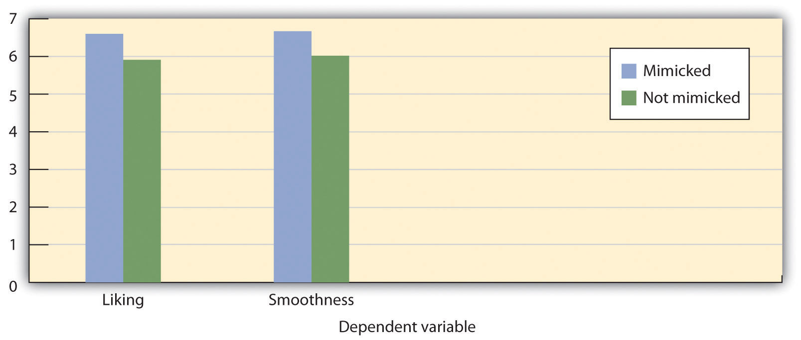
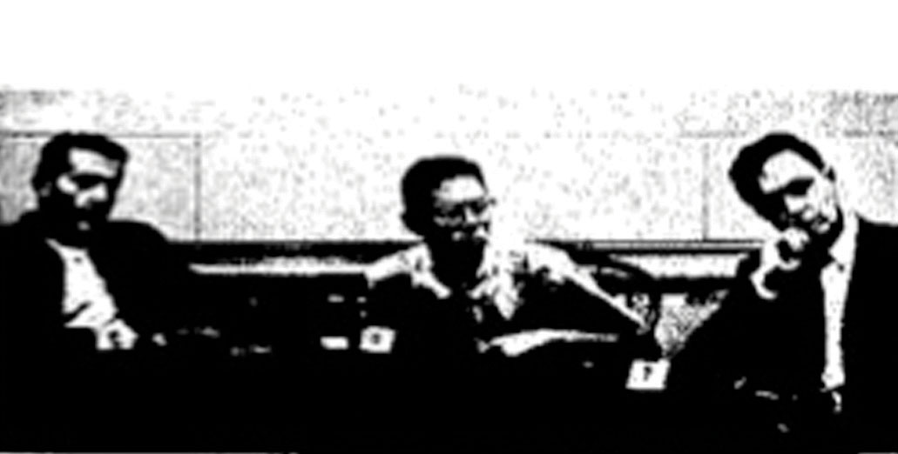
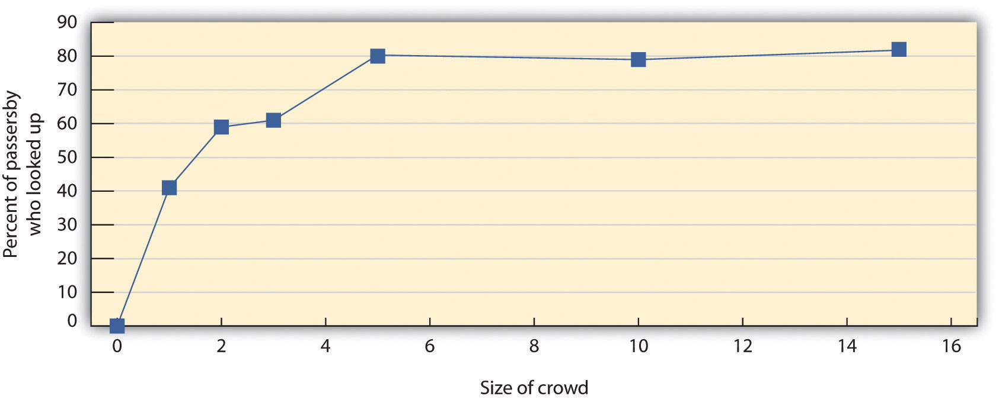
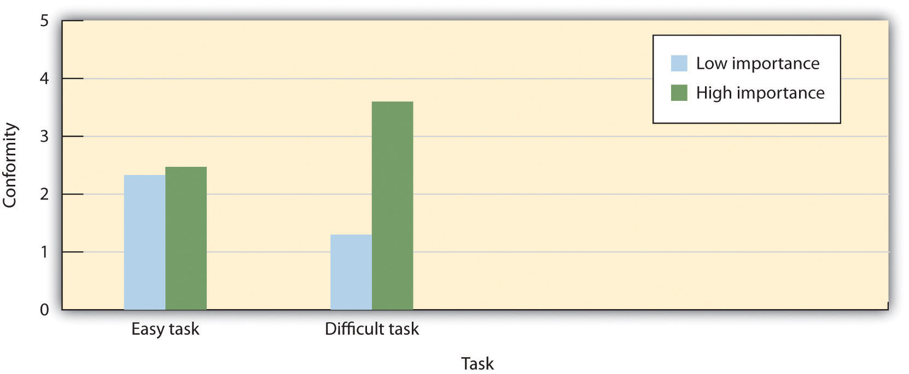
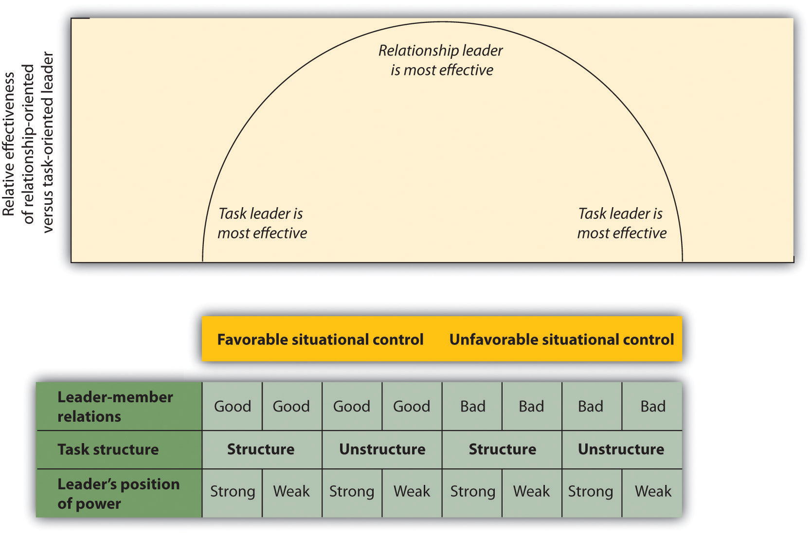

Sam Spady.
Image courtesy of the Sam Spady Foundation.
Sam Spady had it all. During her high school years she was not only homecoming queen but also an honor student, as well as class president. As a 19-year-old college student at Colorado State University, Spady had many dreams for her future, all of which never materialized, as she died on September 5, 2004, after hours of binge drinking.
Spady, who was celebrating with friends at the school’s biggest social event, consumed over 30 alcoholic beverages over a period of 11 hours and was then left at a fraternity house to sleep it off. Another student and fraternity member later discovered her body while showing his mother the house.
An estimated 1,400 college students between the ages of 18 and 24 die from alcohol-related incidents each year, according to the National Institute of Alcohol Abuse and Alcoholism.
Unfortunately, things have not changed since Spady’s death. People still feel as though they’re invincible and bars are enticing students to drink by offering alcohol at inexpensive prices.
Have you ever decided what courses to take by asking for advice from your friends or by observing what courses they were choosing? Have you picked the clothes to wear to a party based on what your friends were wearing? Can you think of a time when you changed your beliefs or behaviors because a person in authority, such as a teacher or a religious or political leader, gave you ideas about new ways to think or new things to do? Or perhaps you started smoking cigarettes or drinking alcohol, even though you didn’t really want to, because some of your friends were doing it.
Your answers to at least some of these questions will be yes because you, like all people, are influenced by those around you. When you find yourself in situations like these, you are experiencing what is perhaps the most basic of all social psychological processes—social influenceThe processes through which other people change our thoughts, feelings, and behaviors and through which we change theirs., defined as the influence of other people on our everyday thoughts, feelings, and behavior (Hogg, 2010).Hogg, M. A. (2010). Influence and leadership. In S. F. Fiske, D. T. Gilbert, & G. Lindzey (Eds.), Handbook of social psychology (Vol. 2, pp. 1166–1207). New York, NY: Wiley.
This chapter focuses on the social influence that leads individuals, sometimes against their will, to adopt and adhere to the opinions and behaviors of others. The outcome of this social influence, known as conformityThe change in beliefs, opinions, or behaviors as a result of our perceptions about what other people believe or do., refers to the change in beliefs, opinions, and behaviors as a result of our perceptions about what other people believe or do. We conform to social influence in part to meet cognitive goals of forming accurate knowledge about the world around us, for instance, by using the opinions and recommendations of others to help us make better decisions. But conformity also involves affective processes. Because we want to be liked and accepted by others, we may sometimes behave in ways that we might not really have wanted to if we had thought about them more carefully. As an example, we may we engage in unhealthy behaviors, such as smoking or alcohol abuse, simply because our friends are engaging in them.
There are many types of conformity, ranging from the simple and unconscious imitation of the other people around us to the obedience created by powerful people who have direct control over us. In this chapter we will consider both conformity and leadership, which is the ability to direct or inspire others to achieve goals. We’ll look at the potential benefits of conforming to others but also consider the costs of doing so. And we will also consider which people are most likely to conform.
Although conformity sounds like it might be a negative thing (and in some cases it is), overall the tendency to be influenced by the actions of others is an important human adaptation. Just as birds conform to the movements of those around them when they fly together in a flock, social influence among humans probably increases our fitness by helping us live and work well together (Coultas, 2004; Fincher, Thornhill, Murray, & Schaller, 2008; Henrich & Boyd, 1998; Kessler & Cohrs, 2008).Coultas, J. (2004). When in Rome…An evolutionary perspective on conformity. Group Processes and Intergroup Relations, 7, 317–331; Fincher, C. L., Thornhill, R., Murray, D. R., & Schaller, M. (2008). Pathogen prevalence predicts human cross-cultural variability in individualism/collectivism. Proceedings of the Royal Society B, 275, 1279–1285; Henrich, J., & Boyd, R. (1998). The evolution of conformist transmission and the emergence of between-group differences. Evolution and Human Behavior, 19, 215–242; Kessler, T., & Cohrs, J. C. (2008). The evolution of authoritarian processes: Fostering cooperation in large-scale groups. Group Dynamics: Theory, Research, and Practice, 12, 73–84. Conformity is determined by the person-situation interaction, and although the situation is extremely powerful, different people are more or less likely to conform.
As you read this chapter, keep in mind that conformity is another example of the ongoing interactive dynamic among people. Just as you are conforming to the influence that others have on you, your behavior is also influencing those others to conform to your beliefs and opinions. You may be surprised by how often these influences are occurring around you.
The typical outcome of social influence is that our beliefs and behaviors become more similar to those of others around us. At times this change occurs in a spontaneous and automatic sense, without any obvious intent of one person to change the other. Perhaps you learned to like jazz or rap music because your roommate was playing a lot of it. You didn’t really want to like the music, and your roommate didn’t force it on you—your preferences changed in passive way. Robert Cialdini and his colleagues (Cialdini, Reno, & Kallgren, 1990)Cialdini, R. B., Reno, R. R., & Kallgren, C. A. (1990). A focus theory of normative conduct: Recycling the concept of norms to reduce littering in public places. Journal of Personality and Social Psychology, 58, 1015–1026. found that college students were more likely to throw litter on the ground when they had just seen another person throw some paper on the ground and were least likely to litter when they had just seen another person pick up and throw paper into a trash can. The researchers interpreted this as a kind of spontaneous conformity—a tendency to follow the behavior of others, often entirely out of our awareness. Even our emotional states become more similar to those we spend more time with (Anderson, Keltner, & John, 2003).Anderson, C., Keltner, D., & John, O. P. (2003). Emotional convergence between people over time. Journal of Personality and Social Psychology, 84(5), 1054–1068.
Imitation as Subtle Conformity
Perhaps you have noticed in your own behavior a type of very subtle conformity—the tendency to imitate other people who are around you. Have you ever found yourself talking, smiling, or frowning in the same way that a friend does? Tanya Chartrand and John Bargh (1999)Chartrand, T. L., & Bargh, J. A. (1999). The chameleon effect: The perception-behavior link and social interaction. Journal of Personality and Social Psychology, 76(6), 893–910. investigated whether the tendency to imitate others would occur even for strangers, and even in very short periods of time.
In their first experiment, students worked on a task with another student, who was actually an experimental confederate. The two worked together to discuss photographs taken from current magazines. While they were working together, the confederate engaged in some unusual behaviors to see if the research participant would mimic them. Specifically, the confederate either rubbed his or her face or shook his or her foot. It turned out that the students did mimic the behavior of the confederate, by themselves either rubbing their own faces or shaking their own feet. And when the experimenters asked the participants if they had noticed anything unusual about the behavior of the other person during the experiment, none of them indicated awareness of any face rubbing or foot shaking.
It is said that imitation is a form of flattery, and we might therefore expect that we would like people who imitate us. Indeed, in a second experiment, Chartrand and Bargh found exactly this. Rather than creating the behavior to be mimicked, in this study the confederate imitated the behaviors of the participant. While the participant and the confederate discussed the magazine photos, the confederate mirrored the posture, movements, and mannerisms displayed by the participant.
As you can see in the following figure, the participants who had been mimicked liked the other person more and indicated that they thought the interaction had gone more smoothly, in comparison with the participants who had not been imitated.
Figure 7.1
Participants who had been mimicked indicated that they liked the person who had imitated them more and that the interaction with that person had gone more smoothly, in comparison with participants who had not been mimicked. Data are from Chartrand and Bargh (1999).Chartrand, T. L., & Bargh, J. A. (1999). The chameleon effect: The perception-behavior link and social interaction. Journal of Personality and Social Psychology, 76(6), 893–910.
Imitation is an important part of social interaction. We easily and frequently mimic others without being aware that we are doing so. We may communicate to others that we agree with their viewpoints by mimicking their behaviors, and we tend to get along better with people with whom we are well “coordinated.” We even expect people to mimic us in social interactions, and we become distressed when they do not (Dalton, Chartrand, & Finkel, 2010).Dalton, A. N., Chartrand, T. L., & Finkel, E. J. (2010). The schema-driven chameleon: How mimicry affects executive and self-regulatory resources. Journal of Personality and Social Psychology, 98(4), 605–617. This unconscious conformity may help explain why we hit it off immediately with some people and never get it together with others (Chartrand & Dalton, 2009; Tickle-Degnen & Rosenthal, 1990, 1992).Chartrand, T. L., & Dalton, A. N. (2009). Mimicry: Its ubiquity, importance, and functionality. In E. Morsella, J. A. Bargh, & P. M. Gollwitzer (Eds.), Oxford handbook of human action (pp. 458–483). New York, NY: Oxford University Press; Tickle-Degnen, L., & Rosenthal, R. (1990). The nature of rapport and its nonverbal correlates. Psychological Inquiry, 1(4), 285–293; Tickle-Degnen, L., & Rosenthal, R. (Eds.). (1992). Nonverbal aspects of therapeutic rapport. Hillsdale, NJ: Lawrence Erlbaum.
Although mimicry represents the more subtle side, conformity also occurs in a more active and thoughtful sense, for instance, when we actively look to our friends’ opinions to determine appropriate behavior, when a car salesperson attempts to make a sale, or even when a powerful dictator uses physical aggression to force the people in his country to engage in the behaviors that he desires. In these cases, the influence is obvious. We know we are being influenced and we may attempt—sometimes successfully, and sometimes less so—to counteract the pressure.
Influence sometimes occurs because we believe that other people have valid knowledge about an opinion or issue, and we use that information to help us make good decisions. When we take our winter coat to school because the weatherman says it’s going to be cold, this is because we think that the weatherman has some good information that we can use. Informational conformityThe change in opinions or behavior that occurs when we conform to people whom we believe have accurate information. is the change in opinions or behavior that occurs when we conform to people whom we believe have accurate information. We base our beliefs on those presented to us by reporters, scientists, doctors, and lawyers because we believe they have more expertise in certain fields than we have. But we also use our friends and colleagues for information; when we choose a prom gown on the basis of our friends’ advice about what looks good on us, we are using informational conformity—we believe that our friends have good judgment about the things that matter to us.
Informational conformity is often the end result of social comparison, the process of comparing our opinions with those of others to gain an accurate appraisal of the validity of an opinion or behavior (Festinger, Schachter, & Back, 1950; Hardin & Higgins, 1996; Turner, 1991).Festinger, L., Schachter, S., & Back, K. (1950). Social pressures in informal groups. New York, NY: Harper; Hardin, C., & Higgins, T. (1996). Shared reality: How social verification makes the subjective objective. In R. M. Sorrentino & E. T. Higgins (Eds.), Handbook of motivation and cognition: Foundations of social behavior (Vol. 3, pp. 28–84). New York, NY: Guilford; Turner, J. C. (1991). Social influence. Pacific Grove, CA: Brooks Cole. Informational conformity lead to real, long-lasting, changes in beliefs. The result of informational influence is normally private acceptanceReal change in opinions on the part of the individual.: real change in opinions on the part of the individual. We believe that taking the winter coat was the right thing to do and that the prom gown really looks good on us.
In other cases we conform not because we want to have valid knowledge but rather to meet the goal of belonging to and being accepted by a group that we care about (Deutsch & Gerard, 1955).Deutsch, M., & Gerard, H. B. (1955). A study of normative and informational social influences upon individual judgment. Journal of Abnormal and Social Psychology, 51, 629–636. When we start smoking cigarettes or buy shoes that we cannot really afford in order to impress others, we do these things not so much because we think they are the right things to do but rather because we want to be liked.
Normative conformityConformity that occurs when we express opinions or behave in ways that help us to be accepted or that keep us from being isolated or rejected by others. occurs when we express opinions or behave in ways that help us to be accepted or that keep us from being isolated or rejected by others. When we engage in normative conformity we conform to social norms—socially accepted beliefs about what we do or should do in particular social contexts (Cialdini, 1993; Sherif, 1936; Sumner, 1906).Cialdini, R. B. (1993). Influence: Science and practice (3rd ed.). New York, NY: Harper Collins; Sherif, M. (1936). The psychology of social norms. New York, NY: Harper & Row; Sumner, W. G. (1906). Folkways. Boston, MA: Ginn.
In contrast to informational conformity, in which the attitudes or opinions of the individual change to match that of the influencers, the outcome of normative conformity often represents public conformity rather than private acceptance. Public conformityA superficial change in behavior (including the public expression of opinions) that is not accompanied by an actual change in one’s private opinion. is a superficial change in behavior (including the public expression of opinions) that is not accompanied by an actual change in one’s private opinion. Conformity may appear in our public behavior even though we may believe something completely different in private. We may obey the speed limit or wear a uniform to our job (behavior) to conform to social norms and requirements, even though we may not necessarily believe that it is appropriate to do so (opinion). We may use drugs with our friends without really wanting to, and without believing it is really right, because our friends are all using drugs. However, behaviors that are originally performed out of a desire to be accepted (normative conformity) may frequently produce changes in beliefs to match them, and the result becomes private acceptance. Perhaps you know someone who started smoking to please his friends but soon convinced himself that it was an acceptable thing to do.
Although in some cases conformity may be purely informational or purely normative, in most cases the goals of being accurate and being accepted go hand-in-hand, and therefore informational and normative conformity often occur at the same time. When soldiers obey their commanding officers, they probably do it both because others are doing it (normative conformity) and because they think it is the right thing to do (informational conformity). It has been argued that the distinction between informational and normative conformity is more apparent than real and that it may not be possible to fully differentiate them (Turner, 1991).Turner, J. C. (1991). Social influence. Pacific Grove, CA: Brooks Cole.
Although conformity occurs whenever group members change their opinions or behaviors as a result of their perceptions of others, we can divide such influence into two types. Majority influenceInfluence that occurs when the beliefs held by the larger number of individuals in the current social group prevail. occurs when the beliefs held by the larger number of individuals in the current social group prevail. In contrast, minority influenceInfluence that occurs when the beliefs held by the smaller number of individuals in the current social group prevail. occurs when the beliefs held by the smaller number of individuals in the current social group prevail. Not surprisingly, majority influence is more common, and we will consider it first.
In a series of important studies on conformity, Muzafer Sherif (1936)Sherif, M. (1936). The psychology of social norms. New York, NY: Harper & Row. used a perceptual phenomenon known as the autokinetic effect to study the outcomes of conformity on the development of group norms. The autokinetic effect is caused by the rapid, small movements of our eyes that occur as we view objects and that allow us to focus on stimuli in our environment. However, when individuals are placed in a dark room that contains only a single, small, stationary pinpoint of light, these eye movements produce an unusual effect for the perceiver—they make the point of light appear to move.
Sherif took advantage of this effect to study how group norms develop in ambiguous situations. In his studies, college students were placed in a dark room with the point of light and were asked to indicate, each time the light was turned on, how much it appeared to move. Some participants first made their judgments alone. Sherif found that although each participant who was tested alone made estimates that were within a relatively narrow range (as if they had their own “individual” norm), there were wide variations in the size of these judgments among the different participants he studied.
Sherif also found that when individuals who initially had made very different estimates were then placed in groups along with one or two other individuals, and in which all the group members gave their responses on each trial aloud (each time in a different random order), the initial differences in judgments among the participants began to disappear, such that the group members eventually made very similar judgments. You can see that this pattern of change, which is shown in Figure 7.2 "Outcomes of Sherif’s Study", illustrates the fundamental principle of social influence—over time, people come more and more to share their beliefs with each other. Sherif’s study is thus a powerful example of the development of group norms.
Figure 7.2 Outcomes of Sherif’s Study

The participants in the studies by Muzafer Sherif (1936)Sherif, M. (1936). The psychology of social norms. New York, NY: Harper & Row. initially had different beliefs about the degree to which a point of light appeared to be moving. (You can see these differences as expressed on Day 1.) However, as they shared their beliefs with other group members over several days, a common group norm developed. Shown here are the estimates made by a group of three participants who met together on four different days.
Furthermore, and indicating that Sherif had created private acceptance, the new group norms continued to influence judgments when the individuals were again tested alone. The participants did not revert back to their initial opinions, even though they were quite free to do so; rather, they stayed with the new group norms. And these conformity effects appear to have occurred entirely out of the awareness of most participants. Sherif (1936, p. 108)Sherif, M. (1936). The psychology of social norms. New York, NY: Harper & Row. reported that the majority of the participants indicated after the experiment was over that their judgments had not been influenced by the judgments made by the other group members.
Sherif also found that the norms that were developed in groups could continue over time. When the original research participants were moved into groups with new people, their opinions subsequently influenced the judgments of the new group members (Jacobs & Campbell, 1961).Jacobs, R. C., & Campbell, D. T. (1961). The perpetuation of an arbitrary tradition through several generations of a laboratory microculture. Journal of Abnormal and Social Psychology, 62, 649–658. The norms persisted through several “generations” (MacNeil & Sherif, 1976)MacNeil, M. K., & Sherif, M. (1976). Norm change over subject generations as a function of arbitrariness of prescribed norms. Journal of Personality and Social Psychology, 34, 762–773. and could influence individual judgments up to a year after the individual was last tested (Rohrer, Baron, Hoffman, & Swander, 1954).Rohrer, J. H., Baron, S. H., Hoffman, E. L., & Swander, D. V. (1954). The stability of autokinetic judgments. American Journal of Psychology, 67, 143–146.
When Solomon Asch (Asch, 1952, 1955)Asch, S. E. (1952). Social psychology. Englewood Cliffs, NJ: Prentice-Hall; Asch, S. E. (1955). Opinions and social pressure. Scientific American, 11, 32. heard about Sherif’s studies, he responded in perhaps the same way that you might have: “Well of course people conformed in this situation, because after all the right answer was very unclear,” you might have thought. Since the study participants didn’t know the right answer (or indeed the “right” answer was no movement at all), it is perhaps not that surprising that people conformed to the beliefs of others.
Asch conducted studies in which, in complete contrast to the autokinetic effect experiments of Sherif, the correct answers to the judgments were entirely unambiguous. In these studies, the research participants were male college students who were told that they were to be participating in a test of visual abilities. The men were seated in a small semicircle in front of a board that displayed the visual stimuli that they were going to judge. The men were told that there would be 18 trials during the experiment, and on each trial they would see two cards. The standard card had a single line that was to be judged. And the test card had three lines that varied in length between about 2 and 10 inches:
The men’s task was simply to indicate which line on the test card was the same length as the line on the standard card. As you can see from the Asch card sample above, there is no question that correct answer is line 1. In fact, Asch found that people made virtually no errors on the task when they made their judgments alone.
On each trial, the each person answered out loud, beginning with one end of the semicircle and moving to the other end. Although the participant did not know it, the other group members were not true participants but experimental confederates who gave predetermined answers on each trial. Because the participant was seated next to last in the row, he always made his judgment after most of the other group members made theirs. Although on the first two trials the confederates each gave the correct answer, on the third trial, and on 11 of the subsequent trials, they all had been instructed to give the same incorrect answer. For instance, even though the correct answer was Line 1, they would all say it was Line 2. Thus when it became the participant’s turn to answer, he could either give the clearly correct answer or conform to the incorrect responses of the confederates.
Asch found that about 76% of the 123 men who were tested gave at least one incorrect response when it was their turn, and 37% of the responses, overall, were conforming. This is indeed evidence for the power of conformity because the research participants were giving clearly incorrect answers out loud. However, conformity was not absolute—in addition to the 24% of the men who never conformed, only 5% of the men conformed on all 12 of the critical trials.
Figure 7.3 Participants in the Asch Line-Judging Experiment
You might think that Asch’s study shows primarily normative conformity, in the sense that the participants gave the wrong answer not because they thought it was correct but because they wanted to avoid being seen as different. But is it not possible that the participants were also a bit unsure of the correct answer? When I look at the picture of one of the participants in Asch’s studies (see Figure 7.3 "Participants in the Asch Line-Judging Experiment"), it looks to me like he is really unsure about what he is seeing. Perhaps, then, even in Asch’s study some informational influence is occurring. Maybe the participants became unsure of their responses and used the opinions of others to help them determine what was correct. Normative and informational conformity often operate together.
The research that we have discussed to this point involves conformity in which the opinions and behaviors of individuals become more similar to the opinions and behaviors of the majority of the people in the group—majority influence. But we do not always blindly conform to the beliefs of the majority. Although more unusual, there are nevertheless cases in which a smaller number of individuals are able to influence the opinions or behaviors of the group—this is minority influence.
It is a good thing that minorities can be influential; otherwise, the world would be pretty boring. When we look back on history we find that it is the unusual, divergent, innovative minority groups or individuals, who—although frequently ridiculed at the time for their unusual ideas—end up being respected for producing positive changes. The work of scientists, religious leaders, philosophers, writers, musicians, and artists who go against group norms by expressing new and unusual ideas frequently is not liked at first. These novel thinkers may be punished—in some cases even killed—for their beliefs. In the end, however, if the ideas are interesting and important, the majority may conform to these new ideas, producing social change. In short, although conformity to majority opinions is essential to provide a smoothly working society, if individuals only conformed to others there would be few new ideas and little social change.
Galileo, Copernicus, and Martin Luther were people who did not conform to the opinions and behaviors of those around them. In the end their innovative ideas changed the thinking of the masses.
The French social psychologist Serge Moscovici was particularly interested in the situations under which minority influence might occur. In fact, he argued that all members of all groups are able, at least in some degree, to influence others, regardless of whether they are in the majority or the minority. To test whether minority group members could indeed produce influence, he and his colleagues (Moscovici, Lage, & Naffrechoux, 1969)Moscovici, S., Lage, E., & Naffrechoux, M. (1969). Influence of a consistent minority on the responses of a majority in a colour perception task. Sociometry, 32, 365–379. created the opposite of Asch’s line perception study, such that there was now a minority of confederates in the group (two) and a majority of experimental participants (four). All six individuals viewed a series of slides depicting colors, supposedly as a study of color perception, and as in Asch’s research, each voiced out loud an opinion about the color of the slide.
Although the color of the slides varied in brightness, they were all clearly blue. Moreover, demonstrating that the slides were unambiguous, just as the line judgments of Asch had been, participants who were asked to make their judgments alone called the slides a different color than blue less than 1% of the time. (When it happened, they called the slides green.)
In the experiment, the two confederates had been instructed to give one of two patterns of answers that were different from the normal responses. In the consistent-minority condition, the two confederates gave the unusual response (green) on every trial. In the inconsistent-minority condition the confederates called the slides “green” on two thirds of their responses and called them blue on the other third.
The minority of two was able to change the beliefs of the majority of four, but only when they were unanimous in their judgments. As shown in Figure 7.4 "The Power of Consistent Minorities", Moscovici found that the presence of a minority who gave consistently unusual responses influenced the judgments made by the experimental participants. When the minority was consistent, 32% of the majority group participants said green at least once and 18% of the responses of the majority group were green. However, as you can see in Figure 7.4 "The Power of Consistent Minorities", the inconsistent minority had virtually no influence on the judgments of the majority.
Figure 7.4 The Power of Consistent Minorities

In the studies of minority influence by Serge Moscovici, only a consistent minority (in which each individual gave the same incorrect response) was able to produce conformity in the majority participants. Data are from Moscovici, Lage, and Naffrechoux (1969).Moscovici, S., Lage, E., & Naffrechoux, M. (1969). Influence of a consistent minority on the responses of a majority in a colour perception task. Sociometry, 32, 365–379.
On the basis of this research, Moscovici argued that minorities could have influence over majorities, provided they gave consistent, unanimous responses. Subsequent research has found that minorities are most effective when they express consistent opinions over time and with each other, when they show that they are invested in their position by making significant personal and material sacrifices, and when they seem to be acting out of principle rather than from ulterior motives (Hogg, 2010).Hogg, M. A. (2010). Influence and leadership. In S. F. Fiske, D. T. Gilbert, & G. Lindzey (Eds.), Handbook of social psychology (Vol. 2, pp. 1166–1207). New York, NY: Wiley. Although they may want to adopt a relatively open-minded and reasonable negotiating style on issues that are less critical to the attitudes they are trying to change, successful minorities must be absolutely consistent with regard to their core arguments (Mugny & Papastamou, 1981).Mugny, G., & Papastamou, S. (1981). When rigidity does not fail: Individualization and psychologicalization as resistance to the diffusion of minority innovation. European Journal of Social Psychology, 10, 43–62.
When minorities are successful at producing influence, they are able to produce strong and lasting attitude change—true private acceptance—rather than simply public conformity. People conform to minorities because they think that they are right, and not because they think it is socially acceptable. Minorities have another, potentially even more important, outcome on the opinions of majority group members—the presence of minority groups can lead majorities to engage in fuller, as well as more divergent, innovative and creative thinking about the topics being discussed (Martin & Hewstone, 2003; Martin, Martin, Smith, & Hewstone, 2007).Martin, R., & Hewstone, M. (2003). Majority versus minority influence: When, not whether, source status instigates heuristic or systematic processing. European Journal of Social Psychology, 33(3), 313–330; Martin, R., Martin, P. Y., Smith, J. R., & Hewstone, M. (2007). Majority versus minority influence and prediction of behavioral intentions and behavior. Journal of Experimental Social Psychology, 43(5), 763–771.
Nemeth and Kwan (1987)Nemeth, C. J., & Kwan, J. L. (1987). Minority influence, divergent thinking, and the detection of correct solutions. Journal of Applied Social Psychology, 17, 788–799. had participants work in groups of four on a creativity task in which they were presented with letter strings such as tdogto and asked to indicate which word came to their mind first as they looked at the letters. The judgments were made privately, which allowed the experimenters to provide false feedback about the responses of the other group members. All participants indicated the most obvious word (in this case, dog) as their response on each of the initial trials. However, the participants were told (according to experimental condition) either that three of the other group members had also reported seeing dog and that one had reported seeing god or that three out of the four had reported seeing god whereas only one had reported dog. Participants then completed other similar word strings on their own, and their responses were studied.
Results showed that when the participants thought that the unusual response (for instance, god rather than dog) was given by a minority of one individual in the group rather than by a majority of three individuals, they subsequently answered more of the new word strings using novel solutions, such as finding words made backward or using a random order of the letters. On the other hand, the individuals who thought that the majority of the group had given the novel response did not develop more creative ideas. The idea is when the participants thought that the novel response came from a group minority (one person), they thought about the responses more carefully, in comparison with the same behaviors performed by majority group members, and this led them to adopt new and creative ways to think about the problems. This result, along with other research showing similar findings, suggests that messages that come from minority groups lead us to think more fully about the decision, which can produce innovative, creative thinking in majority group members (Crano & Chen, 1998).Crano, W. D., & Chen, X. (1998). The leniency contract and persistence of majority and minority influence. Journal of Personality and Social Psychology, 74, 1437–1450.
In summary, we can conclude that minority influence, although not as likely as majority influence, does sometimes occur. The few are able to influence the many when they are consistent and confident in their judgments but are less able to have influence when they are inconsistent or act in a less confident manner. Furthermore, although minority influence is difficult to achieve, if it does occur it is powerful. When majorities are influenced by minorities they really change their beliefs—the outcome is deeper thinking about the message, private acceptance of the message, and in some cases even more creative thinking.
The studies of Asch, Sherif, and Moscovici demonstrate the extent to which individuals—both majorities and minorities—can create conformity in others. Furthermore, these studies provide information about the characteristics of the social situation that are important in determining the extent to which we conform to others. Let’s consider some of those variables.
As the number of people in the majority increases, relative to the number of persons in the minority, pressure on the minority to conform also increases (Latané, 1981; Mullen, 1983).Latané, B. (1981). The psychology of social impact. American Psychologist, 36, 343–356; Mullen, B. (1983). Operationalizing the effect of the group on the individual: A self-attention perspective. Journal of Experimental Social Psychology, 19, 295–322. Asch conducted replications of his original line-judging study in which he varied the number of confederates (the majority subgroup members) who gave initial incorrect responses from 1 to 16 people, while holding the number in the minority subgroup constant at 1 (the single research participant). You may not be surprised to hear the results of this research: When the size of the majorities got bigger, the lone participant was more likely to give the incorrect answer.
Increases in the size of the majority increase conformity, regardless of whether the conformity is informational or normative. In terms of informational conformity, if more people express an opinion, their opinions seem more valid. Thus bigger majorities should result in more informational conformity. But larger majorities will also produce more normative conformity because being different will be harder when the majority is bigger. As the majority gets bigger, the individual giving the different opinion becomes more aware of being different, and this produces a greater need to conform to the prevailing norm.
Although increasing the size of the majority does increase conformity, this is only true up to a point. The increase in the amount of conformity that is produced by adding new members to the majority group (known as the social impactThe increase in the amount of conformity that is produced by adding new members to the majority group. of each group member) is greater for initial majority members than it is for later members (Latané, 1981).Latané, B. (1981). The psychology of social impact. American Psychologist, 36, 343–356. This pattern is shown in Figure 7.5 "Social Impact", which presents data from a well-known experiment by Stanley Milgram and his colleagues (Milgram, Bickman, & Berkowitz, 1969)Milgram, S., Bickman, L., & Berkowitz, L. (1969). Note on the drawing power of crowds of different size. Journal of Personality and Social Psychology, 13, 79–82. that studied how people are influenced by the behavior of others on the streets of New York City.
Milgram had confederates gather in groups on 42nd street in New York City, in front of the Graduate Center of the City University of New York, each looking up at a window on the sixth floor of the building. The confederates were formed into groups ranging from one to 15 people. A video camera in a room on the sixth floor above recorded the behavior of 1,424 pedestrians who passed along the sidewalk next to the groups.
As you can see in Figure 7.5 "Social Impact", larger groups of confederates increased the number of people who also stopped and looked up, but the influence of each additional confederate was generally weaker as size increased. Groups of three confederates produced more conformity than did a single person, and groups of five produced more conformity than groups of three. But after the group reached about six people, it didn’t really matter very much. Just as turning on the first light in an initially dark room makes more difference in the brightness of the room than turning on the second, third, and fourth lights does, adding more people to the majority tends to produce diminishing returns—less effect on conformity.
Figure 7.5 Social Impact
This figure shows the percentage of participants who looked up as a function of the size of the crowd on the street in Milgram’s (1969)Milgram, S., Bickman, L., & Berkowitz, L. (1969). Note on the drawing power of crowds of different size. Journal of Personality and Social Psychology, 13, 79–82. study on the streets of New York. You can see that the amount of conformity increases dramatically until there are five participants, after which it levels off. Similar patterns have been found in many other studies of conformity.
Group size is an important variable that influences a wide variety of behaviors of the individuals in groups. People leave proportionally smaller tips in restaurants as the number in their party increases, and people are less likely to help as the number of bystanders to an incident increases (Latané, 1981).Latané, B. (1981). The psychology of social impact. American Psychologist, 36, 343–356. The number of group members also has an important influence on group performance: As the size of a working group gets larger, the contributions of each individual member to the group effort become smaller. In each case, the influence of group size on behavior is found to be similar to that shown in Figure 7.5 "Social Impact".
As you can see in Figure 7.5 "Social Impact", the effect of adding new individuals to the group eventually levels off entirely, such that adding more people to the majority after that point makes no meaningful difference in the amount of conformity. This peak usually occurs when the majority has about four or five persons. One reason that the impact of new group members decreases so rapidly is because as the number in the group increases, the individuals in the majority are soon seen more as a group rather than as separate individuals. When there are only a couple of individuals expressing opinions, each person is likely to be seen as an individual, holding his or her own unique opinions, and each new individual adds to the impact. As a result, two people are more influential than one, and three more influential than two. However, as the number of individuals grows, and particularly when those individuals are perceived as being able to communicate with each other, the individuals are more likely to be seen as a group rather than as individuals. At this point, adding new members does not change the perception; regardless of whether there are four, five, six, or more members, the group is still just a group. As a result, the expressed opinions or behaviors of the group members no longer seem to reflect their own characteristics, so much as they do that of the group as a whole, and thus increasing the number of group members is less effective in increasing influence (Wilder, 1977).Wilder, D. A. (1977). Perception of groups, size of opposition, and social influence. Journal of Experimental Social Psychology, 13(3), 253–268.
Although the number of people in the group is an important determinant of conformity, it cannot be the only thing—if it were, minority influence would be impossible. It turns out that the consistency or unanimity of the group members is even more important. In Asch’s study, as an example, conformity occurred not so much because many confederates gave a wrong answer but rather because each of the confederates gave the same wrong answer. In one follow-up study that he conducted, Asch increased the number of confederates to 16 but had just one of those confederates give the correct answer. He found that in this case, even though there were 15 incorrect and only one correct answer given by the confederates, conformity was nevertheless sharply reduced—to only about 5% of the participants’ responses. And you will recall that in the minority influence research of Moscovici, the same thing occurred; conformity was only observed when the minority group members were completely consistent in their expressed opinions.
Although you might not be surprised to hear that conformity decreases when one of the group members gives the right answer, you may be more surprised to hear that conformity is reduced even when the dissenting confederate gives a different wrong answer. For example, conformity is reduced dramatically in Asch’s line-judging situation, such that virtually all participants give the correct answer (assume it is line 3 in this case) even when the majority of the confederates have indicated that line 2 is the correct answer and a single confederate indicates that line 1 is correct. In short, conformity is reduced when there is any inconsistency among the members of the majority group—even when one member of the majority gives an answer that is even more incorrect than that given by the other majority group members (Allen & Levine, 1968).Allen, V. L., & Levine, J. M. (1968). Social support, dissent and conformity. Sociometry, 31(2), 138–149.
Why should unanimity be such an important determinant of conformity? For one, when there is complete agreement among the majority members, the individual who is the target of influence stands completely alone and must be the first to break ranks by giving a different opinion. Being the only person who is different is potentially embarrassing, and people who wish to make a good impression on, or be liked by, others may naturally want to avoid this. If you can convince your friend to wear blue jeans rather than a coat and tie to a wedding, then you’re naturally going to feel a lot less conspicuous when you wear jeans too.
Second, when there is complete agreement—remember the consistent minority in the studies by Moscovici—the participant may become less sure of his or her own perceptions. Because everyone else is holding the exact same opinion, it seems that they must be correctly responding to the external reality. When such doubt occurs, the individual may be likely to conform due to informational conformity. Finally, when one or more of the other group members gives a different answer than the rest of the group (so that the unanimity of the majority group is broken), that person is no longer part of the group that is doing the influencing and becomes (along with the participant) part of the group being influenced. You can see that another way of describing the effect of unanimity is to say that as soon as the individual has someone who agrees with him or her that the others may not be correct (a supporter or ally), then the pressure to conform is reduced. Having one or more supporters who challenge the status quo validates one’s own opinion and makes disagreeing with the majority more likely (Allen, 1975; Boyanowsky & Allen, 1973).Allen, V. L. (1975). Social support for nonconformity. In L. Berkowitz (Ed.), Advances in experimental social psychology (Vol. 8). New York, NY: Academic Press; Boyanowsky, E. O., & Allen, V. L. (1973). Ingroup norms and self-identity as determinants of discriminatory behavior. Journal of Personality and Social Psychology, 25, 408–418.
Still another determinant of conformity is the perceived importance of the decision. The studies of Sherif, Asch, and Moscovici may be criticized because the decisions that the participants made—for instance, judging the length of lines or the colors of objects—seem rather trivial. But what would happen when people were asked to make an important decision? Although you might think that conformity would be less when the task becomes more important (perhaps because people would feel uncomfortable relying on the judgments of others and want to take more responsibility for their own decisions), the influence of task importance actually turns out to be more complicated than that.
How Task Importance and Confidence Influence Conformity
The joint influence of an individual’s confidence in his or her beliefs and the importance of the task was demonstrated in an experiment conducted by Baron, Vandello, and Brunsman (1996)Baron, R. S., Vandello, J. A., & Brunsman, B. (1996). The forgotten variable in conformity research: Impact of task importance on social influence. Journal of Personality and Social Psychology, 71, 915–927. that used a slight modification of the Asch procedure to assess conformity. Participants completed the experiment along with two other students, who were actually experimental confederates. The participants worked on several different types of trials, but there were 26 that were relevant to the conformity predictions. On these trials a photo of a single individual was presented first, followed immediately by a “lineup” photo of four individuals, one of whom had been viewed in the initial slide (but who might have been dressed differently):

The participants’ task was to call out which person in the lineup was the same as the original individual using a number between 1 (the person on the left) and 4 (the person on the right). In each of the critical trials the two confederates went before the participant and they each gave the same wrong response.
Two experimental manipulations were used. First, the researchers manipulated task importance by telling some participants (the high importance condition) that their performance on the task was an important measure of eyewitness ability and that the participants who performed most accurately would receive $20 at the end of the data collection. (A lottery using all the participants was actually held at the end of the semester, and some participants were paid the $20.) Participants in the low-importance condition, on the other hand, were told that the test procedure was part of a pilot study and that the decisions were not that important. Second, task difficulty was varied by showing the test and the lineup photos for 5 and 10 seconds, respectively (easy condition) or for only ½ and 1 second, respectively (difficult condition). The conformity score was defined as the number of trials in which the participant offered the same (incorrect) response as the confederates.
Figure 7.6
On easy tasks, participants conformed less when they thought that the decision was of high (versus low) importance, whereas on difficult tasks, participants conformed more when they thought the decision was of high importance. Data are from Baron et al. (1996).Baron, R. S., Vandello, J. A., & Brunsman, B. (1996). The forgotten variable in conformity research: Impact of task importance on social influence. Journal of Personality and Social Psychology, 71, 915–927.
As you can see in the preceding figure, an interaction between task difficulty and task importance was observed. On easy tasks, participants conformed less to the incorrect judgments of others when the decision had more important consequences for them. In these cases, they seemed to rely more on their own opinions (which they were convinced were correct) when it really mattered, but were more likely to go along with the opinions of the others when things were not that critical (probably normative conformity).
On the difficult tasks, however, results were the opposite. In this case participants conformed more when they thought the decision was of high, rather than low, importance. In these cases in which they were more unsure of their opinions and yet they really wanted to be correct, they used the judgments of others to inform their own views (informational conformity).
One of the fundamental aspects of social interaction is that some individuals have more influence than others. Social powerThe ability of a person to create conformity even when the people being influenced may attempt to resist those changes. can be defined as the ability of a person to create conformity even when the people being influenced may attempt to resist those changes (Fiske, 1993; Keltner, Gruenfeld, & Anderson, 2003).Fiske, S. T. (1993). Controlling other people: The impact of power on stereotyping. American Psychologist, 48, 621–628; Keltner, D., Gruenfeld, D. H., & Anderson, C. (2003). Power, approach, and inhibition. Psychological Review, 110(2), 265–284. Bosses have power over their workers, parents have power over their children, and, more generally, we can say that those in authority have power over their subordinates. In short, power refers to the process of social influence itself—those who have power are those who are most able to influence others.
The powerful ability of those in authority to control others was demonstrated in a remarkable set of studies performed by Stanley Milgram (1974).Milgram, S. (1974). Obedience to authority: An experimental view. New York, NY: Harper & Row. Milgram was interested in understanding the factors that lead people to obey the orders given by people in authority. He designed a study in which he could observe the extent to which a person who presented himself as an authority would be able to produce obedience, even to the extent of leading people to cause harm to others.
Like many other social psychologists, Milgram’s interest in conformity stemmed in part from his desire to understand how the presence of a powerful person—particularly the German dictator Adolph Hitler who ordered the killing of millions of people during World War II—could produce obedience. Under Hitler’s direction the German SS troops oversaw the execution of 6 million Jews as well as other “undesirables,” including political and religious dissidents, homosexuals, the mentally and physically disabled, and prisoners of war.
Milgram used newspaper ads to recruit men (and in one study, women) from a wide variety of backgrounds to participate in his research. When the research participant arrived at the lab, he or she was introduced to a man whom the participant believed was another research participant but who was actually an experimental confederate. The experimenter explained that the goal of the research was to study the effects of punishment on learning. After the participant and the confederate both consented to be in the study, the researcher explained that one of them would be the teacher and the other the learner. They were each given a slip of paper and asked to open it and to indicate what it said. In fact both papers read teacher, which allowed the confederate to pretend that he had been assigned to be the learner and thus to assure that the actual participant was always the teacher.
While the research participant (now the teacher) looked on, the learner was taken into the adjoining shock room and strapped to an electrode that was to deliver the punishment. The experimenter explained that the teacher’s job would be to sit in the control room and to read a list of word pairs to the learner. After the teacher read the list once, it would be the learner’s job to remember which words went together. For instance, if the word pair was blue-sofa, the teacher would say the word blue on the testing trials and the learner would have to indicate which of four possible words (house, sofa, cat, or carpet) was the correct answer by pressing one of four buttons in front of him.
After the experimenter gave the “teacher” a sample shock (which was said to be at 45 volts) to demonstrate that the shocks really were painful, the experiment began. The research participant first read the list of words to the learner and then began testing him on his learning. The shock panel, as shown in Figure 7.7 "The Shock Apparatus Used in Milgram’s Obedience Study", was presented in front of the teacher, and the learner was not visible in the shock room. The experimenter sat behind the teacher and explained to him that each time the learner made a mistake the teacher was to press one of the shock switches to administer the shock. Moreover, which switch was to be pressed increased by one level with each mistake, such that each mistake required a stronger shock.
Figure 7.7 The Shock Apparatus Used in Milgram’s Obedience Study

Once the learner (who was, of course, actually an experimental confederate) was alone in the shock room, he unstrapped himself from the shock machine and brought out a tape recorder that he used to play a prerecorded series of responses that the teacher could hear through the wall of the room.
As you can see in Table 7.1 "The Confederate’s Schedule of Protest in the Milgram Experiments", the teacher heard the learner say “ugh!” after the first few shocks. After the next few mistakes, when the shock level reached 150 volts, the learner was heard to exclaim “Let me out of here. I have a heart trouble!” As the shock reached about 270 volts the learner’s protests became more vehement, and after 300 volts the learner proclaimed that he was not going to answer any more questions. From 330 volts and up the learner was silent. The experimenter responded to participants’ questions at this point, if they asked any, with a scripted response indicating that they should continue reading the questions and applying increasing shock when the learner did not respond.
Table 7.1 The Confederate’s Schedule of Protest in the Milgram Experiments
| 75 volts | Ugh! |
| 90 volts | Ugh! |
| 105 voles | Ugh! (louder) |
| 120 volts | Ugh! Hey, this really hurts. |
| 135 volts | Ugh!! |
| 150 volts | Uh!! Experimenter! That’s all. Get me out of here. I told you I had heart trouble. My heart’s starting to bother me now. Get me out of here, please. My heart’s starting to bother me. I refuse to go on. Let me out! |
| 165 volts | Ugh! Let me out! (shouting) |
| 180 volts | Ugh! I can’t stand the pain. Let me out of here! (shouting) |
| 195 volts | Ugh! Let me out of here! Let me out of here! My heart’s bothering me. Let me out of here! You have no right to keep me here! Let me out! Let me out of here! Let me out! Let me out of here! My heart’s bothering me. Let me out! Let me out! |
| 210 volts | Ugh!! Experimenter! Get me out of here. I’ve had enough. I won’t be in the experiment any more. |
| 225 volts | Ugh! |
| 240 volts | Ugh! |
| 255 volts | Ugh! Get me out of here. |
| 270 volts | (agonized scream) Let me out of here. Let me out of here. Let me out of here. Let me out. Do you hear? Let me out of here. |
| 285 volts | (agonized scream) |
| 300 volts | (agonized scream) I absolutely refuse to answer any more. Get me out of here. You can’t hold me here. Get me out. Get me out of here. |
| 315 volts | (intensely agonized scream) Let me out of here. Let me out of here. My heart’s bothering me. Let me out, I tell you. (hysterically) Let me out of here. Let me out of here. You have no right to hold me here. Let me out! Let me out! Let me out! Let me out of here! Let me out! Let me out! |
The results of Milgram’s research were themselves quite shocking. Although all of the participants gave the initial mild levels of shock, responses varied after that. Some refused to continue after about 150 volts, despite the insistence of the experimenter to continue to increase the shock level. Still others, however, continued to present the questions, and to administer the shocks, under the pressure of the experimenter, who demanded that they continue. In the end, 65% of the participants continued giving the shock to the learner all the way up to the 450 volts maximum, even though that shock was marked as “danger: severe shock” and there had been no response heard from the participant for several trials. In sum, well over half of the men who participated had, as far as they knew, shocked another person to death, all as part of a supposed experiment on learning.
In case you are thinking that such high levels of obedience would not be observed in today’s modern culture, there is fact evidence that they would be. Studies similar to Milgram’s findings have been conducted all over the world (Blass, 1999)Blass, T. (1999). The Milgram paradigm after 35 years: Some things we now know about obedience to authority. Journal of Applied Social Psychology, 29, 955–978. and have found similar levels of conformity, with obedience rates ranging from a high of 90% in Spain and the Netherlands (Meeus & Raaijmakers, 1986)Meeus, W. H., & Raaijmakers, Q. A. (1986). Administrative obedience: Carrying out orders to use psychological-administrative violence. European Journal of Social Psychology, 16, 311–324. to a low of 16% among Australian women (Kilham & Mann, 1974).Kilham, W., & Mann, L. (1974). Level of destructive obedience as a function of transmitter and executant roles in the Milgram obedience paradigm. Journal of Personality and Social Psychology, 29, 692–702.
Recently, Milgram’s results were almost exactly replicated, using men and women from a wide variety of ethnic groups, in a study conducted by Jerry Burger at Santa Clara University. In this replication of the Milgram experiment, 65% of the men and 73% of the women agreed to administer increasingly painful electric shocks when they were ordered to by an authority figure (Borge, 2010).Borge, C. (2007). Basic instincts: The science of evil. Retrieved from http://a.abcnews.com/Primetime/Story?id=2765416&page=1 In the replication, however, the participants were not allowed to go beyond the 150 volt shock switch.
Although it might be tempting to conclude that Milgram’s experiments demonstrate that people are innately evil creatures who are ready to shock others to death, Milgram did not believe that this was the case. Rather, he felt that it was the social situation, and not the people themselves, that was responsible for the behavior. To demonstrate this, Milgram conducted research that explored a number of variations on his original procedure, each of which demonstrated that changes in the situation could dramatically influence the amount of conformity. These variations are summarized in Figure 7.8 "Authority and Obedience in Stanley Milgram’s Studies".
Figure 7.8 Authority and Obedience in Stanley Milgram’s Studies

This figure presents the percentage of participants in Stanley Milgram’s (1974) studies on obedience who were maximally obedient (that is, who gave all 450 volts of shock) in some of the variations that he conducted.
In the initial study the authority’s status and power was maximized—the experimenter had been introduced as a respected scientist at a respected university. However, in replications of the study in which the experimenter’s authority was decreased, obedience also declined. In one replication the status of the experimenter was reduced by having the experiment take place in a building located in Bridgeport, Connecticut, rather than at the labs on the Yale University campus, and the research was ostensibly sponsored by a private commercial research firm instead of by the university. In this study less obedience was observed (only 48% of the participants delivered the maximum shock). Full obedience was also reduced (to 20%) when the experimenter’s ability to express his authority was limited by having him sit in an adjoining room and communicate to the teacher by telephone. And when the experimenter left the room and had another student (actually a confederate) give the instructions for him, conformity was also reduced to 20%.
In addition to the role of authority, Milgram’s studies also confirmed the role of unanimity in producing conformity. When another research participant (again an experimental confederate) began by giving the shocks but then later refused to continue and the participant was asked to take over, only 10% were obedient. And if two experimenters were present but only one proposed shocking while the other argued for stopping the shocks, all the research participants took the more benevolent advice and did not shock. Finally, in another condition the teacher sat next to the learner and was forced to wear an insulated glove and to hold the learner’s hand on the shock pad as he administered the shock. Again, obedience was reduced, this time to only 30%.
Perhaps most telling regarding the important role of the situation were the studies in which Milgram allowed the participants to choose their own shock levels or in which one of the experimenters suggested that they should not actually use the shock machine. In these situations, there was virtually no shocking. These conditions show that people do not like to harm others, and when given a choice they will not. On the other hand, the social situation can create powerful, and potentially deadly, social influence.
The Zimbardo Prison Studies and Abu Ghraib
In Milgram’s research we can see a provocative demonstration of how people who have power can control the behavior of others. Can our understanding of the social psychological factors that produce conformity and obedience help us explain the events that occurred in 2004 at Abu Ghraib, the Iraqi prison in which U.S. soldiers physically and psychologically tortured their Iraqi prisoners? The social psychologist Philip Zimbardo thinks so. He notes the parallels between the events that occurred at Abu Ghraib and the events that occurred in the “prison study” that he conducted in 1971.Stanford Prison Experiment. Retrieved from http://www.prisonexp.org/links.htm

Photo of an Iraqi prisoner being tortured by soldiers at the Abu Ghraib prison.
Photo taken by soldiers at Abu Ghraib.
In that study, Zimbardo and his colleagues set up a mock prison. They selected 23 student volunteers and divided them into two groups. One group was chosen to be the “prisoners.” They were picked up at their homes by actual police officers, “arrested,” and brought to the prison to be guarded by the other group of students—the “guards.” The two groups were placed in a setting that was designed to look like a real prison, and the role-play began.
The Zimbardo Prison Study
The study was expected to run for two weeks. However, on the second day, the prisoners tried to rebel against the guards. The guards quickly moved to stop the rebellion by using both psychological punishment and physical abuse. In the ensuing days, the guards denied the prisoners food, water, and sleep; shot them with fire-extinguisher spray; threw their blankets into the dirt; and stripped them naked. On the fifth night the experimenters witnessed the guards putting bags over the prisoners’ heads, chaining their legs, and marching them around. At this point the researchers stopped the experiment early. The conclusions of Zimbardo’s research were clear: People may be so profoundly influenced by their social situation that they become coldhearted jail masters who torture their victims.
Zimbardo’s research can help us understand the events that occurred at Abu Ghraib. Zimbardo acted as an expert witness in the trial of Sergeant Chip Frederick, who was sentenced to eight years in prison for his role in the abuse at Abu Ghraib. Frederick was the Army reservist who was put in charge of the night shift at Tier 1A, where the detainees were abused. During this trial Frederick said, “What I did was wrong, and I don’t understand why I did it.” Zimbardo believes that Frederick acted exactly like the students in the prison study did. He worked in a prison that was overcrowded, filthy, and dangerous, and where he was expected to maintain control over the Iraqi prisoners—in short, the situation he found himself in was very similar to that of Zimbardo’s prison study.
In a recent interview, Zimbardo argued (you can tell that he is a social psychologist) that “human behavior is more influenced by things outside of us than inside.” He believes that, despite our moral and religious beliefs and despite the inherent goodness of people, there are times when external circumstances can overwhelm us and we do things we never thought we were capable of doing. He argued that “if you’re not aware that this can happen, you can be seduced by evil. We need inoculations against our own potential for evil. We have to acknowledge it. Then we can change it” (Driefus, 2007).Driefus, C. (2007, April 3). Finding hope in knowing the universal capacity for evil. New York Times.
You may wonder whether the extreme behavior of the guards and prisoners in Zimbardo’s prison study was unique to the particular social context that he created. Recent research by Stephen Reicher and Alex Haslam (2006)Reicher, S., & Haslam, S. A. (2006). Rethinking the psychology of tyranny: The BBC prison study. British Journal of Social Psychology, 45(1), 1–40. suggests that this is indeed the case. In their research, they recreated Zimbardo’s prison experiment while making some small, but important, changes. For one, the prisoners were not “arrested” before the study began, and the setup of the jail was less realistic. Furthermore, the researchers in this experiment told the “guards” and the “prisoners” that the groups were arbitrary and could change over time (that is, that some prisoners might be able to be promoted to guards). The results of this study were entirely different than those found by Zimbardo. Although this study was also stopped early, this was more because the guards felt uncomfortable in their superior position than because the prisoners were being abused. This “prison” simply did not feel like a real prison to the participants, and as a result they did not take on the roles they were assigned. Again, the conclusions are clear—the specifics of the social situation, more than the people themselves, are often the most important determinants of behavior.
One of the most influential theories of power was developed by Bertram Raven and John French (French & Raven, 1959; Raven, 1992).French, J. R. P., & Raven, B. H. (1959). The bases of social power. In D. Cartwright (Ed.), Studies in social power (pp. 150–167). Ann Arbor, MI: Institute for Social Research; Raven, B. H. (1992). A power/interaction model of interpersonal influence: French and Raven thirty years later. Journal of Social Behavior and Personality, 7(2), 217–244. Raven identified five different types of power—reward power, coercive power, legitimate power, referent power, and expert power (shown in Table 7.2 "Types of Power"), arguing that each type of power involves a different type of social influence and that the different types vary in terms of whether their use will create public conformity or private acceptance. Understanding the types of power is important because it allows us to see more clearly the many ways that people can influence others. Let’s consider these five types of power, beginning with those that are most likely to produce public conformity only and moving on to those that are more likely to produce private acceptance.
Table 7.2 Types of Power
| Reward power | The ability to distribute positive or negative rewards |
| Coercive power | The ability to dispense punishments |
| Legitimate power | Authority that comes from a belief on the part of those being influenced that the person has a legitimate right to demand conformity. |
| Referent power | Influence based on identification with, attraction to, or respect for the power-holder |
| Expert power | Power that comes from other’s beliefs that the power-holder possesses superior skills and abilities |
| Note. French and Raven proposed five types of power, which differ in their likelihood of producing public conformity or private acceptance. | |
|---|---|
Reward powerPower that occurs when a person is able to influence others by providing them with positive outcomes. occurs when one person is able to influence others by providing them with positive outcomes. Bosses have reward power over employees because they are able to increase employees’ salary and job benefits, and teachers have reward power over students because they can assign student high marks. The variety of rewards that can be used by the powerful is almost endless and includes verbal praise or approval, the awarding of status or prestige, and even direct financial payment.
The ability to wield reward power over those we want to influence is contingent on the needs of the person being influenced. Power is greater when the person being influenced has a strong desire to obtain the reward, and power is weaker when the individual does not need the reward. A boss will have more influence on an employee who has no other job prospects than on one who is being sought after by other corporations, and expensive presents will be more effective in persuading those who cannot buy the items with their own money. Because the change in behavior that results from reward power is driven by the reward itself, its use is usually more likely to produce public conformity than private acceptance.
Coercive powerPower that is based on the ability to create negative outcomes for others, for instance, by bullying, intimidating, or otherwise punishing. is power that is based on the ability to create negative outcomes for others, for instance by bullying, intimidating, or otherwise punishing. Bosses have coercive power over employees if they are able (and willing) to punish employees by reducing their salary, demoting them to a lower position, embarrassing them, or firing them. And friends can coerce each other through teasing, humiliation, and ostracism. As with reward power, coercive power is effective only when the person being influenced is dependent upon the power-holder. Furthermore, coercion works only if the person being influenced does not leave the group entirely—people who are punished too much are likely to look for other situations that provide more positive outcomes.
In many cases power-holders use reward and coercive power at the same time—for instance, by both increasing salaries as a result of positive performance but also threatening to reduce them if the performance drops. Because the use of coercion has such negative consequences, authorities are generally more likely to use reward than coercive power (Molm, 1997).Molm, L. D. (1997). Coercive power in social exchange. New York, NY: Cambridge University Press. Coercion is usually more difficult to use, since it often requires energy to keep the person from avoiding the punishment by leaving the situation altogether. And coercive power is less desirable for both the power-holder and the person being influenced because it creates an environment of negative feelings and distrust that is likely to make interactions difficult, undermine satisfaction, and lead to retaliation against the power-holder (Tepper et al., 2009).Tepper, B. J., Carr, J. C., Breaux, D. M., Geider, S., Hu, C., & Hua, W. (2009). Abusive supervision, intentions to quit, and employees’ workplace deviance: A power/dependence analysis. Organizational Behavior and Human Decision Processes, 109(2), 156–167.
As with reward power, coercive power is more likely to produce public conformity than private acceptance. Furthermore, in both cases the effective use of the power requires that the power-holder continually monitor the behavior of the target to be sure that he or she is complying. This monitoring may itself lead to a sense of mistrust between the two individuals in the relationship. The power-holder feels (perhaps unjustly) that the target is only complying due to the monitoring, whereas the target feels (again perhaps unjustly) that the power-holder does not trust him or her.
Whereas reward and coercive power are likely to produce conformity, other types of power, which are not so highly focused around reward and punishment, are more likely to create changes in attitudes as well as behavior (private acceptance). In many ways, then, these sources of power are stronger because they produce real belief change. Legitimate powerPower vested in those who are appointed or elected to positions of authority. is power vested in those who are appointed or elected to positions of authority, such as teachers, politicians, policemen, and judges, and their power is successful because members of the group accept it as appropriate. We accept that governments can levy taxes and that judges can decide the outcomes of court cases because we see these groups and individuals as valid parts of our society. Individuals with legitimate power can exert substantial influence on their followers. Those with legitimate power may not only create changes in the behavior of others but also have the power to create and change the social norms of the group.
In some cases legitimate power is given to the authority figure as a result of laws or elections, or as part of the norms, traditions, and values of the society. The power that the experimenter had over the research participants in Milgram’s study on obedience seems to have been primarily the result of his legitimate power as a respected scientist at an important university. In other cases legitimate power comes more informally, as a result of being a respected group member. People who contribute to the group process and follow group norms gain status within the group and therefore earn legitimate power.
In some cases legitimate power can even be used successfully by those who do not seem to have much power. You may recall that after Hurricane Katrina hit the city of New Orleans in 2005, the people there demanded that the federal government help them rebuild the city. Although these people did not have much reward or coercive power, they were nevertheless perceived as good and respected citizens of the United States. Many U.S. citizens tend to believe that people who do not have as much as others (for instance, those who are very poor) should be treated fairly and that these people may legitimately demand resources from those who have more. This might not always work, but to the extent that it does it represents a type of legitimate power—power that comes from a belief in the appropriateness or obligation to respond to the requests of others with legitimate standing.
People with referent powerPower based on the ability to influence others by leading those others to identify with the power-holder. have an ability to influence others because they can lead those others to identify with them. In this case, the person who provides the influence is (a) a member of an important reference group—someone we personally admire and attempt to emulate; (b) a charismatic, dynamic, and persuasive leader; or (c) a person who is particularly attractive or famous (Heath, McCarthy, & Mothersbaugh, 1994; Henrich & Gil-White, 2001; Kamins, 1989; Wilson & Sherrell, 1993).Heath, T. B., McCarthy, M. S., and Mothersbaugh, D. L. (1994). Spokesperson fame and vividness effects in the context of issue-relevant thinking: The moderating role of competitive setting. Journal of Consumer Research, 20, 520–534; Henrich, J., & Gil-White, F. (2001). The evolution of prestige: Freely conferred status as a mechanism for enhancing the benefits of cultural transmission. Evolution and Human Behavior, 22, 1–32; Kamins, A. M. (1989). Celebrity and non-celebrity in two-sided context. Journal of Advertising Research, 29, 34–42; Wilson, E. J., &. Sherrell, D. L. (1993). Source effects in communication and persuasion: A meta-analysis of effect size. Journal of the Academy of Marketing Science, 21, 101–112. A young child who mimics the opinions or behaviors of an older sibling or a famous baseball player, or a churchgoer who follows the advice of a respected church leader, is influenced by referent power. Referent power generally produces private acceptance rather than public conformity (Kelman, 1961).Kelman, H. (1961). Processes of opinion change. Public Opinion Quarterly, 25, 57–78.
The influence brought on by referent power may occur in a passive sense because the person being emulated does not necessarily attempt to influence others, and the person who is being influenced may not even realize that the influence is occurring. In other cases, however, the person with referent power (such as the leader of a cult) may make full use of his or her status as the target of identification or respect to produce change. In either case, referent power is a particularly strong source of influence because it is likely to result in the acceptance of the opinions of the important other.
French and Raven’s final source of power is expert powerPower based on the possession of valid and accurate information and that leads to private acceptance in followers.. Experts have knowledge or information, and conforming to those whom we perceive to be experts is useful for making decisions about issues for which we have insufficient expertise. Expert power thus represents a type of informational influence based on the fundamental desire to obtain valid and accurate information, and where the outcome is likely to be private acceptance. Conformity to the beliefs or instructions of doctors, teachers, lawyers, and computer experts is an example of expert influence; we assume that these individuals have valid information about their areas of expertise, and we accept their opinions based on this perceived expertise (particularly if their advice seems to be successful in solving problems). Indeed, one method of increasing one’s power is to become an expert in a domain. Expert power is increased for those who possess more information about a relevant topic than others do because the others must turn to this individual to gain the information. You can see, then, that if you want to influence others, it can be useful to gain as much information about the topic as you can.
Does Power Corrupt?
Having power provides some benefits for those who have it. In comparison to those with less power, people who have more power over others are more confident and more attuned to potential opportunities in their environment (Anderson & Berdahl, 2002).Anderson, C., & Berdahl, J. L. (2002). The experience of power: Examining the effects of power on approach and inhibition tendencies. Journal of Personality and Social Psychology, 83, 1362–1377. They are also more likely than are people with less power to take action to meet their goals (Anderson & Galinsky, 2006; Galinsky, Gruenfeld, & Magee, 2003).Anderson, C., & Galinsky, A. D. (2006). Power, optimism, and risk-taking. European Journal of Social Psychology, 36, 511–536; Galinsky A. D., Gruenfeld, D. H, & Magee, J. C. (2003). From power to action. Journal of Personality and Social Psychology, 85, 453–466.
Despite these advantages of having power, a little power goes a long way and having too much can be dangerous, for both the targets of the power and the power-holder himself or herself. In an experiment by David Kipnis (1972),Kipnis, D. (1972). Does power corrupt? Journal of Personality and Social Psychology, 24, 33–41. college students played the role of “supervisors” who were supposedly working on a task with other students (the “workers”). According to random assignment to experimental conditions, one half of the supervisors were able to influence the workers through legitimate power only, by sending them messages attempting to persuade them to work harder. The other half of the supervisors were given increased power. In addition to being able to persuade the workers to increase their output through the messages, they were also given both reward power (the ability to give small monetary rewards) and coercive power (the ability to take away earlier rewards).
Although the workers (who were actually preprogrammed) performed equally well in both conditions, the participants who were given more power took advantage of it by more frequently contacting the workers and more frequently threatening them. The students in this condition relied almost exclusively on coercive power rather than attempting to use their legitimate power to develop positive relations with the subordinates.
Although it did not increase the workers’ performance, having the extra power had a negative effect on the power-holders’ images of the workers. At the end of the study, the supervisors who had been given extra power rated the workers more negatively, were less interested in meeting them, and felt that the only reason the workers did well was to obtain the rewards.
The conclusion of these researchers is clear: Having power may lead people to use it, even though it may not be necessary, which may then lead them to believe that their subordinates are performing only because of the threats. Although using excess power may be successful in the short run, power that is based exclusively on reward and coercion is not likely to produce a positive environment for either the power-holder or the subordinate. People with power may also be more likely to stereotype people with less power than they have (Depret & Fiske, 1999)Depret, E., & Fiske, S. T. (1999). Perceiving the powerful: Intriguing individuals versus threatening groups. Journal of Experimental Social Psychology, 35(5), 461–480. and may be less likely to help other people who are in need (van Kleef et al., 2008).van Kleef, G. A., Oveis, C., van der Löwe, I., LuoKogan, A., Goetz, J., & Keltner, D. (2008). Power, distress, and compassion: Turning a blind eye to the suffering of others. Psychological Science, 19(12), 1315–1322.
Although this research suggests that people may use power when it is available to them, other research has found that this is not equally true for all people—still another case of a person-situation interaction. Serena Chen and her colleagues (Chen, Lee-Chai, & Bargh, 2001)Chen, S., Lee-Chai, A. Y., & Bargh, J. A. (2001). Relationship orientation as a moderator of the effects of social power. Journal of Personality and Social Psychology, 80(2), 173–187. found that students who had been classified as more self-oriented (in the sense that they considered relationships in terms of what they could and should get out of them for themselves) were more likely to misuse their power, whereas students who were classified as other-oriented were more likely to use their power to help others
One type of person who has power over others, in the sense that they are able to influence them, are leaders. Leaders are in a position in which they can exert leadershipThe ability to direct or inspire others to achieve goals., which is the ability to direct or inspire others to achieve goals (Chemers, 2001; Hogg, 2010).Chemers, M. M. (2001). Leadership effectiveness: An integrative review. In M. A. Hogg & R. S. Tindale (Eds.), Blackwell handbook of social psychology: Group processes (pp. 376–399). Oxford, UK: Blackwell; Hogg, M. A. (2010). Influence and leadership. In S. F. Fiske, D. T. Gilbert, & G. Lindzey (Eds.), Handbook of social psychology (Vol. 2, pp. 1166–1207). New York, NY: Wiley. Leaders have many different influence techniques at their disposal: In some cases they may give commands and enforce them with reward or coercive power, resulting in public conformity with the commands. In other cases they may rely on well-reasoned technical arguments or inspirational appeals, making use of legitimate, referent, or expert power, with the goal of creating private acceptance and leading their followers to achieve.
Leadership is a classic example of the combined effects of the person and the social situation. Let’s consider first the person part of the equation and then turn to consider how the person and the social situation work together to create effective leadership.
One approach to understanding leadership is to focus on person variables. Personality theories of leadershipExplanations of leadership based on the idea that some people possess personality characteristics that make them effective leaders. are explanations of leadership based on the idea that some people are simply “natural leaders” because they possess personality characteristics that make them effective (Zaccaro, 2007).Zaccaro, S. J. (2007). Trait-based perspectives of leadership. American Psychologist, 62, 6–16.
One personality variable that is associated with effective leadership is intelligence. Being intelligent improves leadership, as long as the leader is able to communicate in a way that is easily understood by his or her followers (Simonton, 1994, 1995).Simonton, D. K. (1994). Greatness: Who makes history and why. New York, NY: Guilford Press; Simonton, D. K. (1995). Personality and intellectual predictors of leadership. In D. H. Saklofske et al. (Eds.), International handbook of personality and intelligence. Perspectives on individual differences (pp. 739–757). New York, NY: Plenum. Other research has found that a leader’s social skills, such as the ability to accurately perceive the needs and goals of the group members, are also important to effective leadership. People who are more sociable, and therefore better able to communicate with others, tend to make good leaders (Kenny & Zaccaro, 1983; Sorrentino & Boutillier, 1975).Kenny, D. A., & Zaccaro, S. J. (1983). An estimate of variance due to traits in leadership. Journal of Applied Psychology, 68, 678–685; Sorrentino, R. M., & Boutillier, R. G. (1975). The effect of quantity and quality of verbal interaction on ratings of leadership ability. Journal of Experimental Social Psychology, 11, 403–411. Other variables that relate to leadership effectiveness include verbal skills, creativity, self-confidence, emotional stability, conscientiousness, and agreeableness (Cronshaw & Lord, 1987; Judge, Bono, Ilies, & Gerhardt, 2002; Yukl, 2002).Cronshaw, S. F., & Lord, R. G. (1987). Effects of categorization, attribution, and encoding processes on leadership perceptions. Journal of Applied Psychology, 72, 97–106; Judge, T, Bono, J., Ilies, R., & Gerhardt, M. (2002). Personality and leadership: A qualitative and quantitative review, Journal of Applied Psychology, 87, 765–780; Yukl, G. A. (2002). Leadership in organizations. Upper Saddle River, NJ: Prentice Hall. And of course the individual’s skills at the task at hand are important. Leaders who have expertise in the area of their leadership will be more effective than those who do not.
Because so many characteristics seem to be related to leader skills, some researchers have attempted to account for leadership not in terms of individual traits but in terms of a package of traits that successful leaders seem to have. Some have considered this in terms of charisma (Beyer, 1999; Conger & Kanungo, 1998).Beyer, J. M. (1999). Taming and promoting charisma to change organizations. Leadership Quarterly, 10(2), 307–330; Conger, J. A., & Kanungo, R. N. (1998). Charismatic leadership in organizations. Thousand Oaks, CA: Sage. Charismatic leadersEnthusiastic, committed, and self-confident people who tend to talk about the importance of group goals at a broad level and who make personal sacrifices for the group. are leaders who are enthusiastic, committed, and self-confident; who tend to talk about the importance of group goals at a broad level; and who make personal sacrifices for the group. Charismatic leaders express views that support and validate existing group norms but that also contain a vision of what the group could or should be. Charismatic leaders use their referent power to motivate, uplift, and inspire others. And research has found a positive relationship between a leader’s charisma and effective leadership performance (Simonton, 1988).Simonton, D. K. (1988). Presidential style: Personality, biography and performance. Journal of Personality and Social Psychology, 55, 928–936.
Another trait-based approach to leadership is based on the idea that leaders take either transactional or transformational leadership styles with their subordinates (Avolio &Yammarino, 2003; Podsakoff, MacKenzie, Moorman, & Fetter, 1990).Avolio, B. J., & Yammarino, F. J. (2003). Transformational and charismatic leadership: The road ahead. Oxford, UK: Elsevier Press; Podsakoff, P. M., MacKenzie, S. B., Moorman, R. H., & Fetter, R. (1990). Transformational leader behaviors and their effects on followers’ trust in leader, satisfaction, and organizational citizenship behaviors. Leadership Quarterly, 1, 107–142. Transactional leaders are the more regular leaders who work with their subordinates to help them understand what is required of them and to get the job done. Transformational leaders, on the other hand, are more like charismatic leaders—they have a vision of where the group is going and attempt to stimulate and inspire their workers to move beyond their present status and to create a new and better future. Transformational leaders are those who can reconfigure or transform the group’s norms (Reicher & Hopkins, 2003).Reicher, S. D., & Hopkins, N. (2003). On the science of the art of leadership. In D. van Knippenberg and M. A. Hogg (Eds.), Leadership and power: Identity processes in groups and organizations (pp. 197–209). London, UK: Sage.

The Google corporation cofounders Larry Page and Sergey Brin are good examples of transformational leaders who have been able to see new visions and to motivate their workers to achieve them.
Image courtesy of Joi Ito, http://commons.wikimedia.org/wiki/File:Schmidt-Brin-Page-20080520.jpg.
Despite the fact that there appear to be at least some personality traits that relate to leadership ability, the most important approaches to understanding leadership take into consideration both the personality characteristics of the leader and the situation in which the leader is operating. In some cases the situation itself is important. For instance, you might remember that President George W. Bush’s ratings as a leader increased dramatically after the September 11, 2001, terrorist attacks on the World Trade Center. This is a classic example of how a situation can influence the perceptions of a leader’s skill. In other cases, however, both the situation and the person are critical.
One well-known person-situation approach to understanding leadership effectiveness was developed by Fred Fiedler and his colleagues (Ayman, Chemers, & Fiedler, 1995).Ayman, R., Chemers, M. M., & Fiedler, F. (1995). The contingency model of leadership effectiveness: Its level of analysis. Leadership Quarterly, 6(2), 147–167. The contingency model of leadership effectivenessA model of leadership effectiveness that focuses on both person variables and situational variables. is a model of leadership effectiveness that focuses on both person variables and situational variables. Fielder conceptualized the leadership style of the individual as a relatively stable personality variable and measured it by having people consider all the people they had ever worked with and describe the person that they least liked to work with (their least preferred coworker). Those who indicated that they only somewhat disliked their least preferred coworker are relationship-oriented types of people, who are motivated to have close personal relationships with others. However, those who indicated that they did not like this coworker very much were classified as task-oriented types, who are motivated primarily by getting the job done.
In addition to classifying individuals according to their leadership styles, Fiedler also classified the situations in which groups had to perform their tasks, both on the basis of the task itself and on the basis of the leader’s relationship to the group members. Specifically, as shown in Figure 7.9 "The Contingency Model of Leadership Effectiveness", Fiedler thought that three aspects of the group situation were important:
Furthermore, Fielder believed that these factors were ordered in terms of their importance, such that leader-member relationships were more important than task structure, which was in turn more important than position power. As a result, he was able to create eight levels of the “situational favorableness” of the group situation, which roughly range from most favorable to least favorable for the leader. The most favorable relationship involves good relationships, a structured task, and strong power for the leader, whereas the least favorable relationship involves poor relationships, an unstructured task, and weak leader power.
Figure 7.9 The Contingency Model of Leadership Effectiveness
The contingency model is interactionist because it proposes that individuals with different leadership styles will differ in effectiveness in different group situations. Task-oriented leaders are expected to be most effective in situations in which the group situation is very favorable because this gives the leader the ability to move the group forward, or in situations in which the group situation is very unfavorable and in which the extreme problems of the situation require the leader to engage in decisive action. However, in the situations of moderate favorableness, which occur when there is a lack of support for the leader or when the problem to be solved is very difficult or unclear, the more relationship-oriented leader is expected to be more effective. In short, the contingency model predicts that task-oriented leaders will be most effective either when the group climate is very favorable and thus there is no need to be concerned about the group members’ feelings, or when the group climate is very unfavorable and the task-oriented leader needs to take firm control.
Still another approach to understanding leadership is based on the extent to which a group member embodies the norms of the group. The idea is that people who accept group norms and behave in accordance with them are likely to be seen as particularly good group members and therefore become leaders (Hogg, 2001; Hogg & Van Knippenberg, 2003).Hogg, M. A. (2001). A social identity theory of leadership. Personality and Social Psychology Review, 5,184–200; Hogg, M. A., & van Knippenberg, D. (2003). Social identity and leadership processes in groups. Advances in Experimental Social Psychology, 35, 1–52. Group members who follow group norms are seen as more trustworthy (Dirks & Ferrin, 2002)Dirks, K. T., & Ferrin, D. L. (2002). Trust in leadership: Meta-analytic findings and implications for research and practice. Journal of Applied Psychology, 87, 611–628. and are likely to engage in group-oriented behaviors to strengthen their leadership credentials (Platow & van Knippenberg, 2001).Platow, M. J., & van Knippenberg, D. (2001). A social identity analysis of leadership endorsement: The effects of leader in-group prototypicality and distributive intergroup fairness. Personality and Social Psychology Bulletin, 27, 1508–1519.
Although we have focused to this point on the situational determinants of conformity, such as the number of people in the majority and their unanimity and status, we have not yet considered the question of which people are likely to conform and which people are not. In this section we will consider how personality variables, gender, and culture influence conformity.
Even in cases in which the pressure to conform is strong and a large percentage of individuals do conform (such as in Solomon Asch’s line-judging research), not everyone does so. There are usually some people willing and able to go against the prevailing norm. In Asch’s study, for instance, despite the strong situational pressures, 24% of the participants never conformed on any of the trials.
People prefer to have an “optimal” balance between being similar to, and different from, others (Brewer, 2003).Brewer, M. B. (2003). Optimal distinctiveness, social identity, and the self. In M. R. Leary & J. P. Tangney (Eds.), Handbook of self and identity (pp. 480–491). New York, NY: Guilford Press. When people are made to feel too similar to others, they tend to express their individuality, but when they are made to feel too different from others, they attempt to increase their acceptance by others. Supporting this idea, research has found that people who have lower self-esteem are more likely to conform in comparison with those who have higher self-esteem. This makes sense because self-esteem rises when we know we are being accepted by others, and people with lower self-esteem have a greater need to belong. And people who are dependent on and who have a strong need for approval from others are also more conforming (Bornstein, 1992).Bornstein, R. F. (1992). The dependent personality: Developmental, social, and clinical perspectives. Psychological Bulletin, 112, 3–23.
Age also matters, such that individuals who are either younger or older are more easily influenced than individuals who are in their 40s and 50s (Visser & Krosnick, 1998).Visser, P. S., & Krosnick, J. A. (1998). The development of attitude strength over the life cycle: Surge and decline. Journal of Personality and Social Psychology, 75, 1389–1410. People who highly identify with the group that is creating the conformity are also more likely to conform to group norms, in comparison to people who don’t really care very much (Jetten, Spears, & Manstead, 1997; Terry & Hogg, 1996).Jetten, J., Spears, R., & Manstead, A. S. R. (1997). Strength of identification and intergroup differentiation: The influence of group norms. European Journal of Social Psychology, 27, 603–609; Terry, D., & Hogg, M. (1996). Group norms and the attitude-behavior relationship: A role for group identification. Personality and Social Psychology Bulletin, 22, 776–793.
However, although there are some differences among people in terms of their tendency to conform (it has even been suggested that some people have a “need for uniqueness” that leads them to be particularly likely to resist conformity; Snyder & Fromkin, 1977),Snyder, C. R., & Fromkin, H. L. (1977). Abnormality as a positive characteristic: The development and validation of a scale measuring need for uniqueness. Journal of Abnormal Psychology, 86(5), 518–527. research has generally found that the impact of person variables on conformity is smaller than the influence of situational variables, such as the number and unanimity of the majority.
Several reviews and meta-analyses of the existing research on conformity and leadership in men and women have now been conducted, and so it is possible to draw some strong conclusions in this regard. In terms of conformity, the overall conclusion from these studies is that that there are only small differences between men and women in the amount of conformity they exhibit, and these differences are influenced as much by the social situation in which the conformity occurs as by gender differences themselves. For instance, in Milgram’s studies he found no differences in conformity between men and women.
On average, men and women have different levels of self-concern and other-concern. Men are, on average, more concerned about appearing to have high status and may be able to demonstrate this status by acting independently from the opinions of others. On the other hand, and again although there are substantial individual differences among them, women are, on average, more concerned with connecting to others and maintaining group harmony. Taken together, this means that, at least when they are being observed by others, men are likely to hold their ground, act independently, and refuse to conform, whereas women are more likely to conform to the opinions of others in order to prevent social disagreement. These differences are less apparent when the conformity occurs in private (Eagly, 1978, 1983).Eagly, A. H. (1978). Sex differences in influenceability. Psychological Bulletin, 85, 86–116; Eagly, A. H. (1983). Gender and social influence: A social psychological analysis. American Psychologist, 38, 971–981.
The observed gender differences in conformity have social explanations—namely that women are socialized to be more caring about the desires of others—but there are also evolutionary explanations. Men may be more likely to resist conformity to demonstrate to women that they are good mates. Griskevicius, Goldstein, Mortensen, Cialdini, and Kenrick (2006)Griskevicius, V., Goldstein, N. J., Mortensen, C. R., Cialdini, R. B., & Kenrick, D. T. (2006). Going along versus going alone: When fundamental motives facilitate strategic (non)conformity. Journal of Personality and Social Psychology, 91, 281–294. found that men, but not women, who had been primed with thoughts about romantic and sexual attraction were less likely to conform to the opinions of others on a subsequent task than were men who had not been primed to think about romantic attraction.
In addition to the public versus private nature of the situation, the topic being discussed also is important, such that both men and women are less likely to conform on topics that they know a lot about, in comparison with topics on which they feel less knowledgeable (Eagly & Chravala, 1986).Eagly, A. H., & Chravala, C. (1986). Sex differences in conformity: Status and gender-role interpretations. Psychology of Women Quarterly, 10, 203–220. When the topic is sports, women tend to conform to men, whereas the opposite is true when the topic is fashion. Thus it appears that the small observed differences between men and women in conformity are due, at least in part, to informational influence.
Because men have higher status in most societies, they are more likely to be perceived as effective leaders (Eagly, Makhijani, & Klonsky, 1992; Rojahn & Willemsen, 1994; Shackelford, Wood, & Worchel, 1996).Eagly, A. H., Makhijani, M. G., & Klonsky, B. G. (1992). Gender and evaluation of leaders: A meta-analysis. Psychological Bulletin, 111, 3–22; Rojahn, K., & Willemsen, T. M. (1994). The evaluation of effectiveness and likability of gender-role congruent and gender-role incongruent leaders. Sex Roles, 30, 109–119; Shackelford, S., Wood, W., & Worchel, S. (1996). Behavioral styles and the influence of women in mixed-sex groups. Social Psychology Quarterly, 59, 284–293. And men are more likely to be leaders in most cultures. For instance, in the current U.S. Senate, 83% of the members are men. The percentages also favor men in the U.S. House of Representatives (84%) and the Supreme Court (66%). Similar differences are found in the legislatures of almost all countries. There are also more men than women in leadership roles, and particularly in high-level administrative positions, in many different types of businesses and other organizations. Women are not promoted to positions of leadership as fast as men are in real working groups, even when actual performance is taken into consideration (Geis, Boston, & Hoffman, 1985; Heilman, Block, & Martell, 1995).Geis, F. L., Boston, M. B., and Hoffman, N. (1985). Sex of authority role models and achievement by men and women: Leadership performance and recognition, Journal of Personality and Social Psychology, 49, 636–653; Heilman, M. E., Block, C. J., & Martell, R. (1995). Sex stereotypes: Do they influence perceptions of managers? Journal of Social Behavior and Personality, 10, 237–252.
Men are also more likely than women to emerge and act as leaders in small groups, even when other personality characteristics are accounted for (Bartol & Martin, 1986; Megargee, 1969; Porter, Geis, Cooper, & Newman, 1985).Bartol, K. M., & Martin, D. C. (1986). Women and men in task groups. In R. D. Ashmore & F. K. Del Boca (Eds.), The social psychology of female-male relations. New York, NY: Academic Press; Megargee, E. I. (1969). Influence of sex roles on the manifestation of leadership. Journal of Applied Psychology, 53, 377–382; Porter, N., Geis, F. L., Cooper, E., & Newman, E. (1985). Androgyny and leadership in mixed-sex groups. Journal of Personality and Social Psychology, 49, 808–823. In one experiment, Nyquist and Spence (1986)Nyquist, L. V., & Spence, J. T. (1986). Effects of dispositional dominance and sex role expectations on leadership behaviors. Journal of Personality and Social Psychology, 50, 87–93. had pairs of same- and mixed-sex students interact. In each pair there was one highly dominant and one low dominant individual, as assessed by previous personality measures. They found that in pairs in which there was one man and one woman, the dominant man became the leader 90% of the time, but the dominant woman became the leader only 35% of the time.
Keep in mind, however, that the fact that men are perceived as effective leaders, and are more likely to become leaders, does not necessarily mean that they are actually better, more effective leaders than women. Indeed, a meta-analysis studying the effectiveness of male and female leaders did not find that there were any gender differences overall (Eagly, Karau, & Makhijani, 1995)Eagly, A. H., Karau, S. J., & Makhijani, M. G. (1995). Gender and the effectiveness of leaders: A meta-analysis. Psychological Bulletin, 117, 125–145. and even found that women excelled over men in some domains. Furthermore, the differences that were found tended to occur primarily when a group was first forming but dissipated over time as the group members got to know one another individually.
One difficulty for women as they attempt to lead is that traditional leadership behaviors, such as showing independence and exerting power over others, conflict with the expected social roles for women. The norms for what constitutes success in corporate life are usually defined in masculine terms, including assertiveness or aggressiveness, self-promotion, and perhaps even macho behavior. It is difficult for women to gain power because to do so they must conform to these masculine norms, and often this goes against their personal beliefs about appropriate behavior (Rudman & Glick, 1999).Rudman, L. A., & Glick, P. (1999). Feminized management and backlash toward agentic women: The hidden costs to women of a kinder, gentler image of middle-managers. Journal of Personality and Social Psychology, 77, 1004–1010. And when women do take on male models of expressing power, it may backfire on them because they end up being disliked because they are acting nonstereotypically for their gender. In an important U.S. Supreme Court case, a female account executive argued that she was denied promotion (although she was a top performer) because she acted too “masculine,” even though the same behaviors were required for the success of the male coworkers (Fiske, Bersoff, Borgida, Deaux, & Heilman, 1991).Fiske, S. T., Bersoff, D. N., Borgida, E., Deaux, K., & Heilman, M. E. (1991). Social science research on trial. The use of sex stereotyping research in Price Waterhouse v. Hopkins. American Psychologist, 46, 1049–1060.
One way that women can react to this “double-bind” in which they must take on masculine characteristics to succeed, but if they do they are not liked, is to adopt more feminine leadership styles, in which they use more interpersonally oriented behaviors such as agreeing with others, acting in a friendly manner, and encouraging subordinates to participate in the decision-making process (Eagly & Johnson, 1990; Eagly et al., 1992; Wood, 1987).Eagly, A. H., & Johnson, B. T. (1990). Gender and leadership style: A meta-analysis. Psychological Bulletin, 108, 233–256; Eagly, A. H., Makhijani, M. G., & Klonsky, B. G. (1992). Gender and evaluation of leaders: A meta-analysis. Psychological Bulletin, 111, 3–22; Wood, W. (1987). A meta-analytic review of sex differences in group performance. Psychological Bulletin, 102, 53–71. In short, women are more likely to take on a transformational leadership style than are men—doing so allows them to be effective leaders while not acting in an excessively masculine way (Eagly & Carli, 2007; Eagly, Johannesen-Schmidt, & van Egen, 2003).Eagly, A. H., & Carli, L. L. (2007). Through the labyrinth: The truth about how women become leaders. Boston, MA: Harvard Business School Press; Eagly, A. H., Johannesen-Schmidt, M. C., & van Engen, M. L. (2003). Transformational, transactional, and laissez-faire leadership styles: A meta-analysis comparing men and women. Psychological Bulletin, 129, 569–591.
In sum, women may conform somewhat more than men, although these differences are small and limited to situations in which the responses are made publicly. In terms of leadership effectiveness, there is no evidence that men, overall, make better leaders than do women. However, men do better as leaders on tasks that are “masculine” in the sense that they require the ability to direct and control people. On the other hand, women do better on tasks that are more “feminine” in the sense that they involve creating harmonious relationships among the group members.
In addition to gender differences, there is also evidence that conformity is greater in some cultures than others. Your knowledge about the cultural differences between individualistic and collectivistic cultures might lead you to think that collectivists will be more conforming than individualists, and there is some support for this. Bond and Smith (1996)Bond, R., & Smith, P. B. (1996). Culture and conformity: A meta-analysis of studies using Asch’s (1952b, 1956) line judgment task. Psychological Bulletin, 119(1), 111–137. analyzed results of 133 studies that had used Asch’s line-judging task in 17 different countries. They then categorized each of the countries in terms of the degree to which it could be considered collectivist versus individualist in orientation. They found a significant relationship, such that conformity was greater in more collectivist than in individualist countries.
Kim and Markus (1999)Kim, H., & Markus, H. R. (1999). Deviance or uniqueness, harmony or conformity? A cultural analysis. Journal of Personality and Social Psychology, 77, 785–800. analyzed advertisements from popular magazines in the United States and in Korea to see if they differentially emphasized conformity and uniqueness. As you can see in Figure 7.10 "Culture and Conformity", they found that while U.S. magazine ads tended to focus on uniqueness (“Choose your own view!” and “Individualize”) Korean ads tended to focus more on themes of conformity (“Seven out of 10 people use this product” and “Our company is working toward building a harmonious society”).
Figure 7.10 Culture and Conformity

Kim and Markus (1999) found that U.S. magazine ads tended to focus on uniqueness whereas Korean ads tended to focus more on conformity.
In summary, although the effects of individual differences on conformity tend to be smaller than those of the social context, they do matter. And gender and cultural differences can also be important. Conformity, like most other social psychological processes, represents an interaction between the situation and the person.
Conformity is usually quite adaptive overall, both for the individuals who conform and for the group as a whole. Conforming to the opinions of others can help us enhance and protect ourselves by providing us with important and accurate information and can help us better relate to others. Following the directives of effective leaders can help a group attain goals that would not be possible without them. And if only half of the people in your neighborhood thought it was appropriate to stop on red and go on green but the other half thought the opposite—and behaved accordingly—there would be problems indeed.
But social influence does not always produce conformity. If we feel that we have the choice to conform or not conform, we may well choose to do so in order to be accepted or to obtain valid knowledge. On the other hand, if we perceive that others are trying to force our conformity, the influence pressure may backfire, resulting in the opposite of what the influencer intends.
Consider an experiment conducted by Pennebaker and Sanders (1976),Pennebaker, J. W., & Sanders, D. Y. (1976). American graffiti: Effects of authority and reactance arousal. Personality and Social Psychology Bulletin, 2, 264–267. who attempted to get people to stop writing graffiti on the walls of campus restrooms. In some restrooms they posted a sign that read “Do not write on these walls under any circumstances!” whereas in other restrooms they placed a sign that simply said “Please don’t write on these walls.” Two weeks later, the researchers returned to the restrooms to see if the signs had made a difference. They found that there was much less graffiti in the second restroom than in the first one. It seems as if people who were given strong pressures to not engage in the behavior were more likely to react against those directives than were people who were given a weaker message.
When individuals feel that their freedom is being threatened by influence attempts and yet they also have the ability to resist that persuasion, they may experience psychological reactanceA strong motivational state that prevents conformity., a strong motivational state that prevents conformity (Brehm, 1966; Miron & Brehm, 2006).Brehm, J. (1966). A theory of psychological reactance. New York, NY: Academic Press; Miron, A. M., & Brehm, J. W. (2006). Reaktanz theorie—40 Jahre spärer. Zeitschrift fur Sozialpsychologie, 37, 9–18. doi: 10.1024/0044-3514.37.1.9. Reactance is aroused when our ability to choose which behaviors to engage in is eliminated or threatened with elimination. The outcome of the experience of reactance is that people may not conform at all and may even move their opinions or behaviors away from the desires of the influencer.
Reactance represents a desire to restore freedom that is being threatened. A child who feels that his or her parents are forcing him to eat his asparagus may react quite vehemently with a strong refusal to touch the plate. And an adult who feels that she is being pressured by a car salesman might feel the same way and leave the showroom entirely, resulting in the opposite of the salesman’s intended outcome.
Of course, parents are sometimes aware of this potential, and even use “reverse psychology”—for example, telling a child that she cannot go outside when they really want her to, hoping that reactance will occur. In the Broadway musical The Fantasticks, neighboring fathers set up to make one’s daughter and the other’s son fall in love with each other by building a fence between their properties. The fence is seen by the children as an infringement on their freedom to see each other, and as predicted by the idea of reactance, they ultimately fall in love.
In addition to helping us understand the affective determinants of conformity and of failure to conform, reactance has been observed to have its ironic effects in a number of real-world contexts. For instance, Wolf and Montgomery (1977)Wolf, S., & Montgomery, D. A. (1977). Effects of inadmissible evidence and level of judicial admonishment to disregard on the judgments of mock jurors. Journal of Applied Social Psychology, 7, 205–219. found that when judges give jury members instructions indicating that they absolutely must not pay any attention to particular information that had been presented in a courtroom trial (because it had been ruled as inadmissible), the jurors were more likely to use that information in their judgments. And Bushman and Stack (1996)Bushman, B. J., & Stack, A. D. (1996). Forbidden fruit versus tainted fruit: Effects of warning labels on attraction to television violence. Journal of Experimental Psychology: Applied, 2, 207–226. found that warning labels on violent films (for instance, “This film contains extreme violence—Viewer discretion advised”) created more reactance (and thus led participants to be more interested in viewing the film) than did similar labels that simply provided information (“This film contains extreme violence”). In another relevant study, Kray, Reb, Galinsky, and Thompson (2004)Kray, L. J., Reb, J., Galinsky, A. D., & Thompson, L. (2004). Stereotype reactance at the bargaining table: The effect of stereotype activation and power on claiming and creating value. Personality and Social Psychology Bulletin, 30, 399–411. found that when women were told that they were poor negotiators and would be unable to succeed on a negotiation task, this information led them to work even harder and to be more successful at the task.
Finally, within clinical therapy, it has been argued that people sometimes are less likely to try to reduce the harmful behaviors that they engage in, such as smoking or drug abuse, when the people they care about try too hard to press them to do so (Shoham, Trost, & Rohrbaugh, 2004).Shoham, V., Trost, S. E., & Rohrbaugh, M. J. (Eds.). (2004). From state to trait and back again: Reactance theory goes clinical. Mahwah, NJ: Lawrence Erlbaum. One patient was recorded as having reported that his wife kept telling him that he should quit drinking, saying, “If you loved me enough, you’d give up the booze.” However, he also reported that when she gave up on him and said instead, “I don’t care what you do anymore,” he then enrolled in a treatment program (Shoham et al., 2004, p. 177).Shoham, V., Trost, S. E., & Rohrbaugh, M. J. (Eds.). (2004). From state to trait and back again: Reactance theory goes clinical. Mahwah, NJ: Lawrence Erlbaum.
Following this paragraph are some examples of social influence and conformity. In each case, the person who is conforming has changed his or her behavior because of the expressed opinions or behaviors of another person. In some cases the influence of the others is more obvious; in other cases less so. Using the principles discussed in Chapter 1 "Introducing Social Psychology", first consider the likely role of the social situation versus the individual person. Did the person freely engage in the behavior, did the social situation force him to engage in the behavior, or was there some combination of both? Then consider the role of underlying human goals—concern for self and concern for others. Did the conformity occur primarily because the person wanted to feel good about himself or herself or because he or she cared for those around him or her? Then ask yourself about the role of cognition, affect, and behavior. Do you think the conformity was primarily behavioral, or did it involve a real change in the person’s thoughts and feelings?
This chapter has concerned the many and varied ways that conformity influences our everyday lives. Perhaps you were surprised about the wide variety of phenomena—ranging from the unaware imitation of others to leadership to blind obedience to authority—that involve conformity. Yet because you are thinking like a social psychologist, you will realize why conformity occurs and why it is such an important part of our everyday life. We conform to better meet the basic goals of self-concern and other-concern. Conforming helps us do better by helping us make accurate, informed decisions. And conformity helps us be accepted by those we care about.
Because you are now more aware of these factors, you will naturally pay attention to the times when you conform to others and when you influence others to conform. You will see how important—indeed how amazing—the effects of conformity are. You will realize that almost everything we do involves conformity, or perhaps the desire to avoid being too conforming. Furthermore, you will realize (and hopefully use this knowledge to inform your everyday decisions) that conformity is sometimes an important part of societal functioning and that at other times conformity creates bad—indeed horrible—outcomes.
You can use your understanding of conformity to help understand your own behavior. Do you think you conform too much, or too little? Do you think about when you do or don’t conform? Are you more of a conformist or an independent thinker—and why do you prefer to be that way? Perhaps you will use your understanding of the power of conformity when you judge others. Do you have a new understanding of the behavior of the soldiers at Abu Ghraib? Do you perhaps now understand better how much they were influenced by the social situation?
Your understanding of the process of conformity may also help you develop more satisfying relations with others. Because you now understand the importance of conformity, you will also understand how to make use of these powers to influence others. If you are in a leadership position, you now have a better idea about the many influence techniques that are available to you and better understand their likely outcomes on others.
Conformity refers to the change in beliefs, opinions, and behaviors that occurs as the result of social influence. The typical outcome of conformity is that peoples’ beliefs and behaviors become more similar to those of others around them.
The change in opinions or behavior that occurs when we conform to people whom we believe have accurate information is known as informational conformity. Informational conformity usually results in private acceptance, which is real change in opinions on the part of the individual.
Normative conformity occurs when we express opinions or behave in ways that help us to be accepted or that keep us from being isolated or rejected by those we care about. The outcome of normative conformity is frequently public conformity—a change in behavior that is not accompanied by an actual change in one’s private opinion.
Majority influence occurs when the views or behaviors of a larger number of individuals in the current social group prevail. Majority influence may frequently produce public conformity. One powerful example of majority influence can be found in the line-judging studies of Solomon Asch.
Minority influence occurs when the views of a smaller number of individuals prevail. Although less frequent than majority influence, minority influence can occur if the minority expresses their views consistently and confidently. An example is Moscovici’s color-judgment study. Because minorities force group members to think more fully about a topic, they can produce more creative thinking.
The extent to which we conform is influenced by the size of the majority group. The increase in the amount of conformity that is produced by adding new members to the majority group, known as the social impact of each group member, is greater for initial majority members than it is for later members.
Conformity decreases sharply when there is any disagreement among the members of the group that is trying to create influence. Unanimity is powerful in part because being the only person who is different is potentially embarrassing, and because we want to be liked by others, we may naturally want to avoid this.
Milgram’s study on obedience is an example of the power of an authority to create obedience. Milgram found that, when an authority figure accepted responsibility for the behavior of the individuals, 65% of the participants followed his instructions and administered what they thought was severe and dangerous shock to another person.
The conformity observed in Milgram’s study was due in part to the authority of the experimenter. In a replication when the experimenter had lower status, obedience was reduced. Obedience was also reduced when the experimenter’s ability to express his authority was limited by having him sit in an adjoining room and communicate to the teacher by telephone. Milgram’s studies also confirmed the role of unanimity in producing conformity.
Social power is the ability of one individual to create behavioral or belief changes in another person. Five types of social power—reward, coercive, legitimate, referent, and expert power—vary in terms of whether they are more likely to create private acceptance or public conformity.
Leaders use many types of power to influence others. Some approaches to understanding the nature of leadership have focused on the personality of the leader, finding that variables such as intelligence and sociability are associated with good leaders. Other leadership styles, such as those exhibited by charismatic and transformational leaders, have also been studied. Other approaches, including the contingency model of leadership effectiveness, examine the conditions under which different types of leaders are most likely to be effective.
People with lower self-esteem are more likely to conform than are those with higher self-esteem, and people who are dependent on and who have a strong need for approval from others are also more conforming.
Men, on average, are more concerned about appearing to have high status by acting independently from the opinions of others; they are more likely to resist changing their beliefs in public than are women. In contrast, women, on average, are more concerned with connecting to others and maintaining group harmony; they are more likely to conform to the opinions of others in order to prevent social disagreement.
Men and women differ in their preferred leadership styles, such that women use more relationship-oriented approaches than men use. Although men are perceived to be better leaders than women, and often are more likely to become leaders, there is no evidence that either men or women are more effective leaders.
When individuals feel that their freedom is being threatened by influence attempts, and yet they also have the ability to resist that persuasion, they may develop psychological reactance and not conform at all. Reactance has been shown to occur in many real-world contexts.